-
CirrusDCSSecurityandAuditModule
0h 19m 49s+947ms
16:38:25 PMCirrusDCSSecurityandAuditModule
03.31.2023 16:38:25 03.31.2023 16:58:15 0h 19m 49s+947ms@CirrusDCSI want to use this template for my feature fileVerify whether User is able to navigate to DcsHostLogin and verify the security and audit modulecom.zkteco.cirrusdcs.stepDefinitions.CirrusDCS.i_initialize_drivers_for_DCS_automation()Driver InitializedGiven I visit CirrusDCS HostLogin pageThen I visit CirrusDCS HostLogin with valid credentialsThen I visit CirrusDCS HostLogin and verify Security and audit module is displayed with its submenuVerify whether User is able to click on the host role page and verify the all the fields are availablecom.zkteco.cirrusdcs.stepDefinitions.CirrusDCS.i_initialize_drivers_for_DCS_automation()Driver InitializedGiven I visit CirrusDCS HostLogin pageThen I visit CirrusDCS HostLogin with valid credentialsThen I click on the security and audit moduleThen I click on the host role submoduleThen I verify that all the fields are available on the pageTo verify whether User is able to view the pages accessible for host_User/host_supre/host_admin Roles.com.zkteco.cirrusdcs.stepDefinitions.CirrusDCS.i_initialize_drivers_for_DCS_automation()Driver InitializedGiven I visit CirrusDCS HostLogin pageThen I visit CirrusDCS HostLogin with valid credentialsThen I click on the security and audit moduleThen I click on the host role submoduleThen I verify that user is able to view the pages accessible for host_User/host_supre/host_admin Rolescom.zkteco.cirrusdcs.stepDefinitions.CirrusDCS.teardown(io.cucumber.java.Scenario)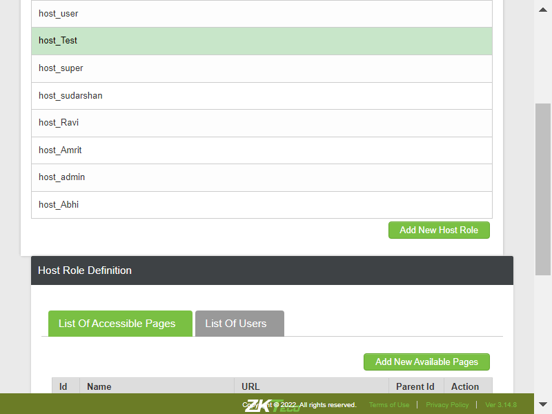To veriify whether User is able to Delete the page that is accessible for selected Role User.com.zkteco.cirrusdcs.stepDefinitions.CirrusDCS.i_initialize_drivers_for_DCS_automation()Driver InitializedGiven I visit CirrusDCS HostLogin pageThen I visit CirrusDCS HostLogin with valid credentialsThen I click on the security and audit moduleThen I click on the host role submoduleThen I verify that User is able to Delete the page that is accessible for selected Role Usercom.zkteco.cirrusdcs.stepDefinitions.CirrusDCS.teardown(io.cucumber.java.Scenario)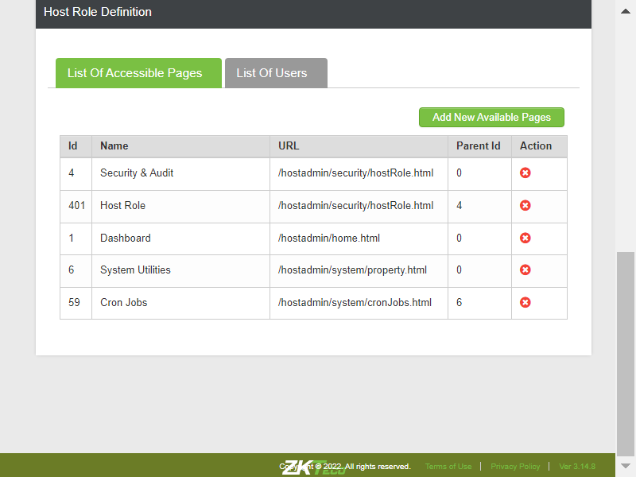To verify whether deleted page is not relflecting in the Page when logged incom.zkteco.cirrusdcs.stepDefinitions.CirrusDCS.i_initialize_drivers_for_DCS_automation()Driver InitializedGiven I visit CirrusDCS HostLogin pageThen I visit CirrusDCS HostLogin with valid credentialsThen I click on the security and audit moduleThen I click on the host role submoduleThen I verify that User is able to Delete the page that is accessible for selected Role UserThen I verify that deleted page is not reflecting in the List Of Accessible Pages for selected role userStep skippedcom.zkteco.cirrusdcs.stepDefinitions.CirrusDCS.teardown(io.cucumber.java.Scenario) To verify whether User is able to add the deleted page to the Role selectedcom.zkteco.cirrusdcs.stepDefinitions.CirrusDCS.i_initialize_drivers_for_DCS_automation()Driver InitializedGiven I visit CirrusDCS HostLogin pageThen I visit CirrusDCS HostLogin with valid credentialsThen I click on the security and audit moduleThen I click on the host role submoduleThen I verify that User is able to Delete the page that is accessible for selected Role UserThen I verify that deleted page is not reflecting in the List Of Accessible Pages for selected role userStep skippedThen I click on the Add New available pagesStep skippedThen I view the available pageStep skippedThen I verify that user is able to add the deleted page to the selected roleStep skippedcom.zkteco.cirrusdcs.stepDefinitions.CirrusDCS.teardown(io.cucumber.java.Scenario)To verify whether deleted page is not relflecting in the Page when logged incom.zkteco.cirrusdcs.stepDefinitions.CirrusDCS.i_initialize_drivers_for_DCS_automation()Driver InitializedGiven I visit CirrusDCS HostLogin pageThen I visit CirrusDCS HostLogin with valid credentialsThen I click on the security and audit moduleThen I click on the host role submoduleThen I verify that User is able to Delete the page that is accessible for selected Role UserThen I logout the DCS host accountStep skippedThen I visit CirrusDCS HostLogin with valid credentialsStep skippedThen I click on the security and audit moduleStep skippedThen I click on the host role submoduleStep skippedThen I verify that deleted page is not reflecting in the List Of Accessible Pages for selected role userStep skippedcom.zkteco.cirrusdcs.stepDefinitions.CirrusDCS.teardown(io.cucumber.java.Scenario)
To verify whether User is able to add the deleted page to the Role selectedcom.zkteco.cirrusdcs.stepDefinitions.CirrusDCS.i_initialize_drivers_for_DCS_automation()Driver InitializedGiven I visit CirrusDCS HostLogin pageThen I visit CirrusDCS HostLogin with valid credentialsThen I click on the security and audit moduleThen I click on the host role submoduleThen I verify that User is able to Delete the page that is accessible for selected Role UserThen I verify that deleted page is not reflecting in the List Of Accessible Pages for selected role userStep skippedThen I click on the Add New available pagesStep skippedThen I view the available pageStep skippedThen I verify that user is able to add the deleted page to the selected roleStep skippedcom.zkteco.cirrusdcs.stepDefinitions.CirrusDCS.teardown(io.cucumber.java.Scenario)To verify whether deleted page is not relflecting in the Page when logged incom.zkteco.cirrusdcs.stepDefinitions.CirrusDCS.i_initialize_drivers_for_DCS_automation()Driver InitializedGiven I visit CirrusDCS HostLogin pageThen I visit CirrusDCS HostLogin with valid credentialsThen I click on the security and audit moduleThen I click on the host role submoduleThen I verify that User is able to Delete the page that is accessible for selected Role UserThen I logout the DCS host accountStep skippedThen I visit CirrusDCS HostLogin with valid credentialsStep skippedThen I click on the security and audit moduleStep skippedThen I click on the host role submoduleStep skippedThen I verify that deleted page is not reflecting in the List Of Accessible Pages for selected role userStep skippedcom.zkteco.cirrusdcs.stepDefinitions.CirrusDCS.teardown(io.cucumber.java.Scenario) To verify whether User is able to view the list of Users of Rolecom.zkteco.cirrusdcs.stepDefinitions.CirrusDCS.i_initialize_drivers_for_DCS_automation()Driver InitializedGiven I visit CirrusDCS HostLogin pageThen I visit CirrusDCS HostLogin with valid credentialsThen I click on the security and audit moduleThen I click on the host role submoduleThen I click on the List of users btnThen I verify that User is able to view the list of UsersStep skippedcom.zkteco.cirrusdcs.stepDefinitions.CirrusDCS.teardown(io.cucumber.java.Scenario)
To verify whether User is able to view the list of Users of Rolecom.zkteco.cirrusdcs.stepDefinitions.CirrusDCS.i_initialize_drivers_for_DCS_automation()Driver InitializedGiven I visit CirrusDCS HostLogin pageThen I visit CirrusDCS HostLogin with valid credentialsThen I click on the security and audit moduleThen I click on the host role submoduleThen I click on the List of users btnThen I verify that User is able to view the list of UsersStep skippedcom.zkteco.cirrusdcs.stepDefinitions.CirrusDCS.teardown(io.cucumber.java.Scenario) To verify whether User is able to "Delete the User" from the selected Rolecom.zkteco.cirrusdcs.stepDefinitions.CirrusDCS.i_initialize_drivers_for_DCS_automation()Driver InitializedGiven I visit CirrusDCS HostLogin pageThen I visit CirrusDCS HostLogin with valid credentialsThen I click on the security and audit moduleThen I click on the host role submoduleThen I click on the List of users btnThen I click on the Action btn which is under ListOf User btnStep skippedThen I verify that user is able to delete the user from the delete the User pageStep skippedcom.zkteco.cirrusdcs.stepDefinitions.CirrusDCS.teardown(io.cucumber.java.Scenario)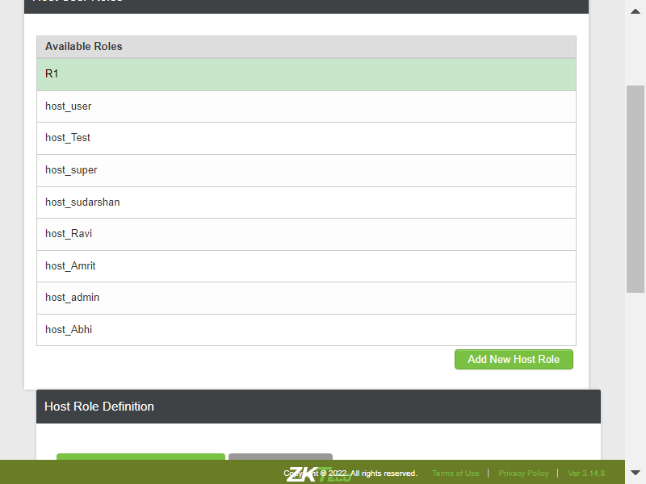To verify whether Deleted User can be added to User name listcom.zkteco.cirrusdcs.stepDefinitions.CirrusDCS.i_initialize_drivers_for_DCS_automation()Driver InitializedGiven I visit CirrusDCS HostLogin pageThen I visit CirrusDCS HostLogin with valid credentialsThen I click on the security and audit moduleThen I click on the host role submoduleThen I click on the List of users btnThen I click on the Action btn which is under ListOf User btnStep skippedThen I verify that user is able to delete the user from the delete the User pageStep skippedThen I click on the Add hosts users btnStep skippedThen I view the available usersStep skippedThen I click on the Save btn which is avliable on the available usersStep skippedThen I verify that user is able to add the deleted page to the selected roleStep skippedcom.zkteco.cirrusdcs.stepDefinitions.CirrusDCS.teardown(io.cucumber.java.Scenario)To verify whether User is able to navigate to Tenant Role page.com.zkteco.cirrusdcs.stepDefinitions.CirrusDCS.i_initialize_drivers_for_DCS_automation()Driver InitializedGiven I visit CirrusDCS HostLogin pageThen I visit CirrusDCS HostLogin with valid credentialsThen I click on the security and audit moduleThen I click on the tenant role submoduleThen I verify that user is able to view the all the available fieldscom.zkteco.cirrusdcs.stepDefinitions.CirrusDCS.teardown(io.cucumber.java.Scenario)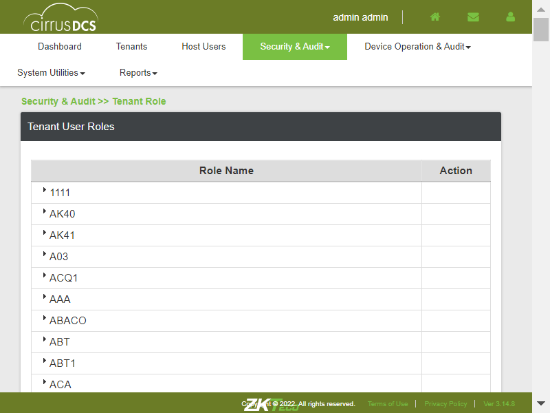To verify whether User is able to create new Tenant role.com.zkteco.cirrusdcs.stepDefinitions.CirrusDCS.i_initialize_drivers_for_DCS_automation()Driver InitializedGiven I visit CirrusDCS HostLogin pageThen I visit CirrusDCS HostLogin with valid credentialsThen I click on the security and audit moduleThen I click on the tenant role submoduleThen I click on the Add new Tenant Role buttonThen I fill the all the fields in the Add new Tenant Role windowThen I Verify that user is able to create new tenant roleTo verify whether User is able to add new widget to the Tenant role.com.zkteco.cirrusdcs.stepDefinitions.CirrusDCS.i_initialize_drivers_for_DCS_automation()Driver InitializedGiven I visit CirrusDCS HostLogin pageThen I visit CirrusDCS HostLogin with valid credentialsThen I click on the security and audit moduleThen I click on the tenant role submoduleThen I click on the particular tenant which is available in the tenant user roles blockThen I click on the edit button on the particular tenant roleThen I click on the Add New available WedgetThen I view the Assign dashboard wedget window and select the Namecom.zkteco.cirrusdcs.stepDefinitions.CirrusDCS.teardown(io.cucumber.java.Scenario)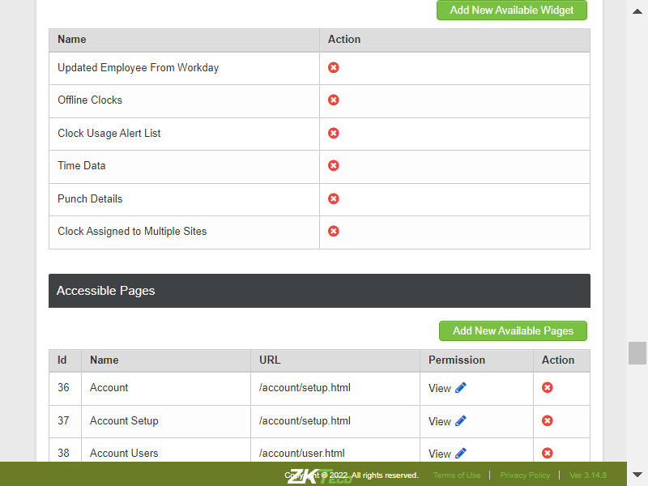To verify whether User is able to view list of pages accessible for the tenant rolecom.zkteco.cirrusdcs.stepDefinitions.CirrusDCS.i_initialize_drivers_for_DCS_automation()Driver InitializedGiven I visit CirrusDCS HostLogin pageThen I visit CirrusDCS HostLogin with valid credentialsThen I click on the security and audit moduleThen I click on the tenant role submoduleThen I click on the particular tenant which is available in the tenant user roles blockThen I click on the edit button on the particular tenant roleThen I verify that user is able to view the list of pages accessible for the particular tenant roleTo verify whether User is able to Add the pages to the Tenant role Accessible pages list.com.zkteco.cirrusdcs.stepDefinitions.CirrusDCS.i_initialize_drivers_for_DCS_automation()Driver InitializedGiven I visit CirrusDCS HostLogin pageThen I visit CirrusDCS HostLogin with valid credentialsThen I click on the security and audit moduleThen I click on the tenant role submoduleThen I click on the particular tenant which is available in the tenant user roles blockThen I click on the edit button on the particular tenant roleThen I add the new page under the particular tenant roleThen I verify that user is able to view the list of pages accessible for the particular tenant roleStep skippedcom.zkteco.cirrusdcs.stepDefinitions.CirrusDCS.teardown(io.cucumber.java.Scenario)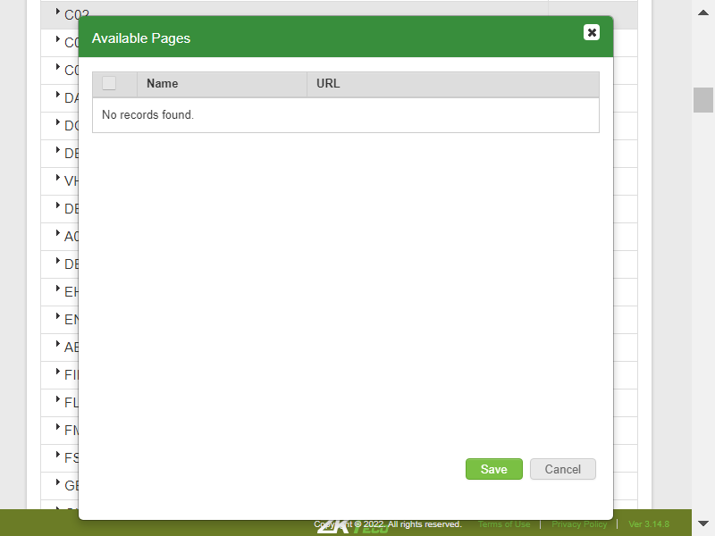To verify whether User is able to change permissions given to the accessible pages of the tenant role.com.zkteco.cirrusdcs.stepDefinitions.CirrusDCS.i_initialize_drivers_for_DCS_automation()Driver InitializedGiven I visit CirrusDCS HostLogin pageThen I visit CirrusDCS HostLogin with valid credentialsThen I click on the security and audit moduleThen I click on the tenant role submoduleThen I click on the particular tenant which is available in the tenant user roles blockTo verify whether User is able to Delete the accessible page for the Tenant Role.com.zkteco.cirrusdcs.stepDefinitions.CirrusDCS.i_initialize_drivers_for_DCS_automation()Driver InitializedGiven I visit CirrusDCS HostLogin pageThen I visit CirrusDCS HostLogin with valid credentialsThen I click on the security and audit moduleThen I click on the tenant role submoduleThen I click on the particular tenant which is available in the tenant user roles blockThen I select the particular tenant's tenant role and click on the edit buttonThen I click on the Add new available page under the Accessible pages blockStep skippedThen I view the respected Accessible page under the respected tenant roleStep skippedcom.zkteco.cirrusdcs.stepDefinitions.CirrusDCS.teardown(io.cucumber.java.Scenario)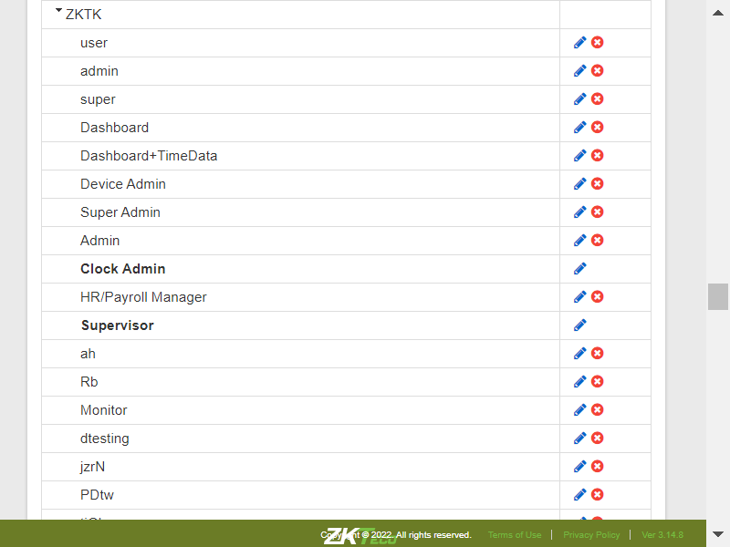To verify whether User is able to navigate to Security policy page.com.zkteco.cirrusdcs.stepDefinitions.CirrusDCS.i_initialize_drivers_for_DCS_automation()Driver InitializedGiven I visit CirrusDCS HostLogin pageThen I visit CirrusDCS HostLogin with valid credentialsThen I click on the security and audit moduleThen I click on the security policy submoduleThen I verify that user is able to view the all the available fields in the security policy submoduleTo verify whether User is able to change the password streangth.com.zkteco.cirrusdcs.stepDefinitions.CirrusDCS.i_initialize_drivers_for_DCS_automation()Driver InitializedGiven I visit CirrusDCS HostLogin pageThen I visit CirrusDCS HostLogin with valid credentialsThen I click on the security and audit moduleThen I click on the security policy submoduleThen I click on the password strength fieldsThen I verify user is able to view the all the option under in the password strength fieldcom.zkteco.cirrusdcs.stepDefinitions.CirrusDCS.teardown(io.cucumber.java.Scenario)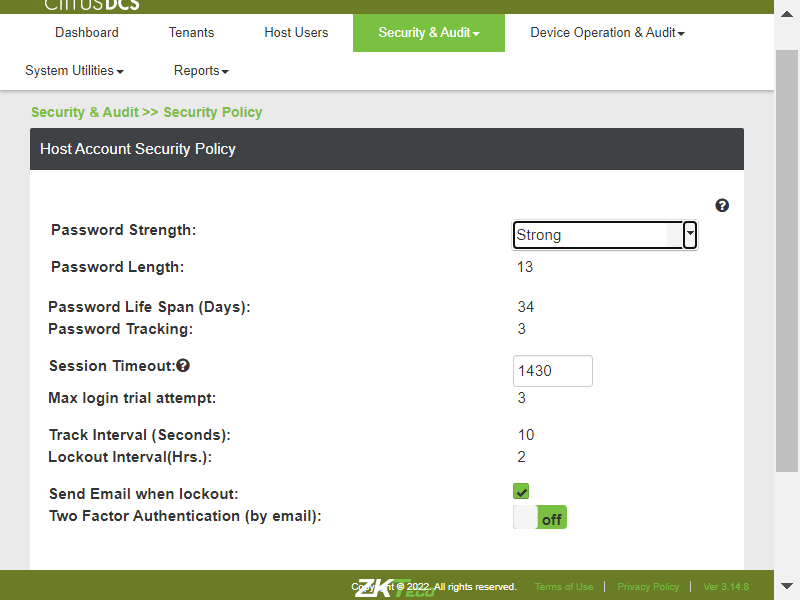To verify whether User is able to set password life span.com.zkteco.cirrusdcs.stepDefinitions.CirrusDCS.i_initialize_drivers_for_DCS_automation()Driver InitializedGiven I visit CirrusDCS HostLogin pageThen I visit CirrusDCS HostLogin with valid credentialsThen I click on the security and audit moduleThen I click on the security policy submoduleThen I click on the password life span daysThen I verify user is able to set the set password life span value as per the requirementcom.zkteco.cirrusdcs.stepDefinitions.CirrusDCS.teardown(io.cucumber.java.Scenario)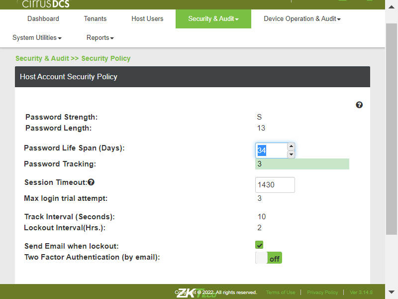To verify whether User is able to set the session Timeoutcom.zkteco.cirrusdcs.stepDefinitions.CirrusDCS.i_initialize_drivers_for_DCS_automation()Driver InitializedGiven I visit CirrusDCS HostLogin pageThen I visit CirrusDCS HostLogin with valid credentialsThen I click on the security and audit moduleThen I click on the security policy submoduleThen I click on the session time outThen I verify user is able to set the session time out value as per the requirementcom.zkteco.cirrusdcs.stepDefinitions.CirrusDCS.teardown(io.cucumber.java.Scenario)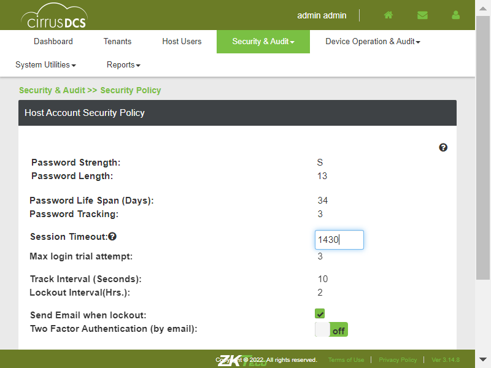To verify whether User is able to Set the Track interval timecom.zkteco.cirrusdcs.stepDefinitions.CirrusDCS.i_initialize_drivers_for_DCS_automation()Driver InitializedGiven I visit CirrusDCS HostLogin pageThen I visit CirrusDCS HostLogin with valid credentialsThen I click on the security and audit moduleThen I click on the security policy submoduleThen I click on the track intervalThen I verify user is able to set the track interval value as per the requirementcom.zkteco.cirrusdcs.stepDefinitions.CirrusDCS.teardown(io.cucumber.java.Scenario)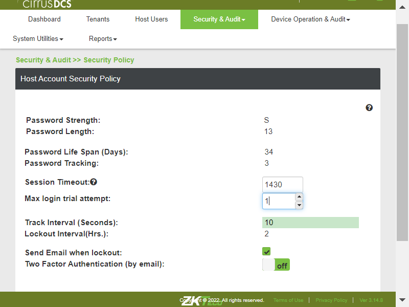To verify whether User is able to set the password length.com.zkteco.cirrusdcs.stepDefinitions.CirrusDCS.i_initialize_drivers_for_DCS_automation()Driver InitializedGiven I visit CirrusDCS HostLogin pageThen I visit CirrusDCS HostLogin with valid credentialsThen I click on the security and audit moduleThen I click on the security policy submoduleThen I click on the password lengthThen I verify user is able to set the password length value as per the requirementcom.zkteco.cirrusdcs.stepDefinitions.CirrusDCS.teardown(io.cucumber.java.Scenario)
To verify whether User is able to "Delete the User" from the selected Rolecom.zkteco.cirrusdcs.stepDefinitions.CirrusDCS.i_initialize_drivers_for_DCS_automation()Driver InitializedGiven I visit CirrusDCS HostLogin pageThen I visit CirrusDCS HostLogin with valid credentialsThen I click on the security and audit moduleThen I click on the host role submoduleThen I click on the List of users btnThen I click on the Action btn which is under ListOf User btnStep skippedThen I verify that user is able to delete the user from the delete the User pageStep skippedcom.zkteco.cirrusdcs.stepDefinitions.CirrusDCS.teardown(io.cucumber.java.Scenario)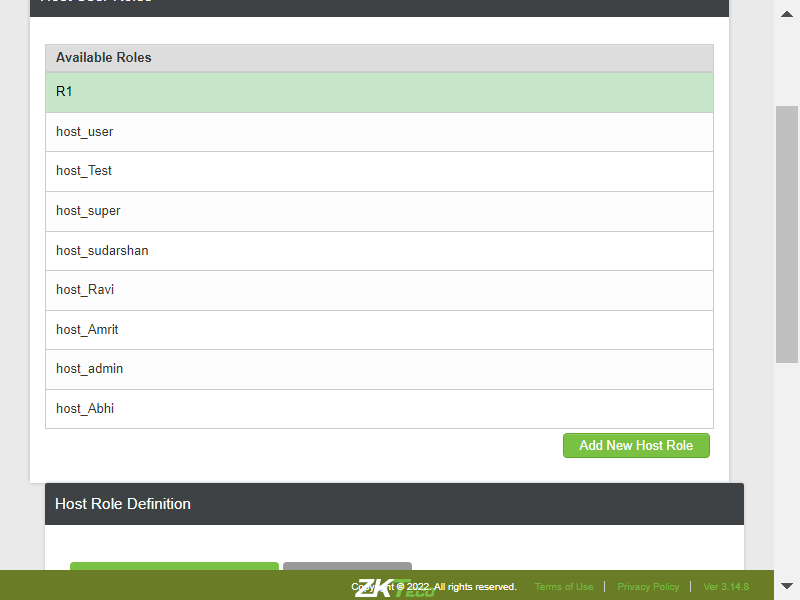To verify whether Deleted User can be added to User name listcom.zkteco.cirrusdcs.stepDefinitions.CirrusDCS.i_initialize_drivers_for_DCS_automation()Driver InitializedGiven I visit CirrusDCS HostLogin pageThen I visit CirrusDCS HostLogin with valid credentialsThen I click on the security and audit moduleThen I click on the host role submoduleThen I click on the List of users btnThen I click on the Action btn which is under ListOf User btnStep skippedThen I verify that user is able to delete the user from the delete the User pageStep skippedThen I click on the Add hosts users btnStep skippedThen I view the available usersStep skippedThen I click on the Save btn which is avliable on the available usersStep skippedThen I verify that user is able to add the deleted page to the selected roleStep skippedcom.zkteco.cirrusdcs.stepDefinitions.CirrusDCS.teardown(io.cucumber.java.Scenario)To verify whether User is able to navigate to Tenant Role page.com.zkteco.cirrusdcs.stepDefinitions.CirrusDCS.i_initialize_drivers_for_DCS_automation()Driver InitializedGiven I visit CirrusDCS HostLogin pageThen I visit CirrusDCS HostLogin with valid credentialsThen I click on the security and audit moduleThen I click on the tenant role submoduleThen I verify that user is able to view the all the available fieldscom.zkteco.cirrusdcs.stepDefinitions.CirrusDCS.teardown(io.cucumber.java.Scenario)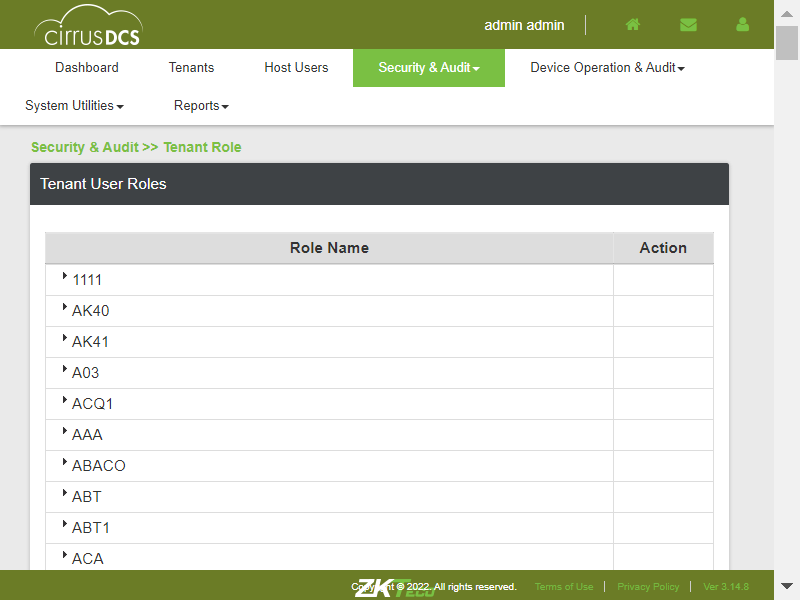To verify whether User is able to create new Tenant role.com.zkteco.cirrusdcs.stepDefinitions.CirrusDCS.i_initialize_drivers_for_DCS_automation()Driver InitializedGiven I visit CirrusDCS HostLogin pageThen I visit CirrusDCS HostLogin with valid credentialsThen I click on the security and audit moduleThen I click on the tenant role submoduleThen I click on the Add new Tenant Role buttonThen I fill the all the fields in the Add new Tenant Role windowThen I Verify that user is able to create new tenant roleTo verify whether User is able to add new widget to the Tenant role.com.zkteco.cirrusdcs.stepDefinitions.CirrusDCS.i_initialize_drivers_for_DCS_automation()Driver InitializedGiven I visit CirrusDCS HostLogin pageThen I visit CirrusDCS HostLogin with valid credentialsThen I click on the security and audit moduleThen I click on the tenant role submoduleThen I click on the particular tenant which is available in the tenant user roles blockThen I click on the edit button on the particular tenant roleThen I click on the Add New available WedgetThen I view the Assign dashboard wedget window and select the Namecom.zkteco.cirrusdcs.stepDefinitions.CirrusDCS.teardown(io.cucumber.java.Scenario)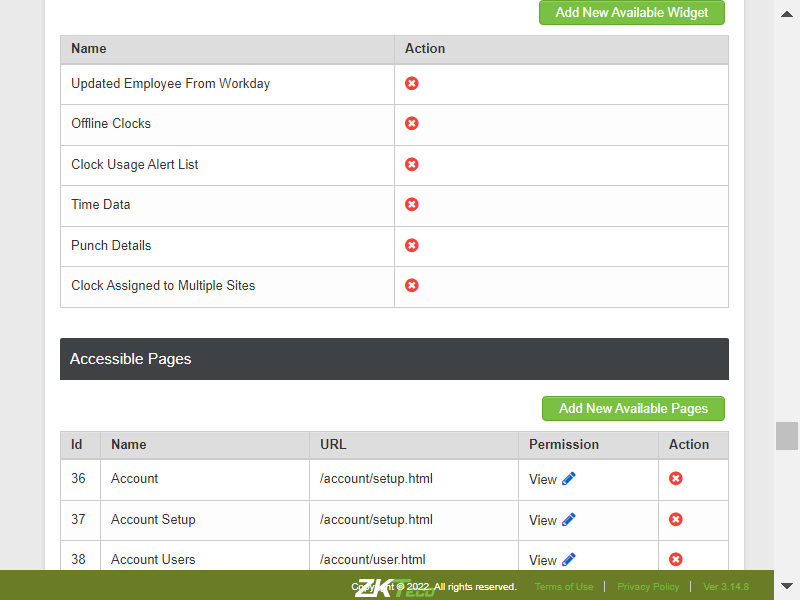To verify whether User is able to view list of pages accessible for the tenant rolecom.zkteco.cirrusdcs.stepDefinitions.CirrusDCS.i_initialize_drivers_for_DCS_automation()Driver InitializedGiven I visit CirrusDCS HostLogin pageThen I visit CirrusDCS HostLogin with valid credentialsThen I click on the security and audit moduleThen I click on the tenant role submoduleThen I click on the particular tenant which is available in the tenant user roles blockThen I click on the edit button on the particular tenant roleThen I verify that user is able to view the list of pages accessible for the particular tenant roleTo verify whether User is able to Add the pages to the Tenant role Accessible pages list.com.zkteco.cirrusdcs.stepDefinitions.CirrusDCS.i_initialize_drivers_for_DCS_automation()Driver InitializedGiven I visit CirrusDCS HostLogin pageThen I visit CirrusDCS HostLogin with valid credentialsThen I click on the security and audit moduleThen I click on the tenant role submoduleThen I click on the particular tenant which is available in the tenant user roles blockThen I click on the edit button on the particular tenant roleThen I add the new page under the particular tenant roleThen I verify that user is able to view the list of pages accessible for the particular tenant roleStep skippedcom.zkteco.cirrusdcs.stepDefinitions.CirrusDCS.teardown(io.cucumber.java.Scenario)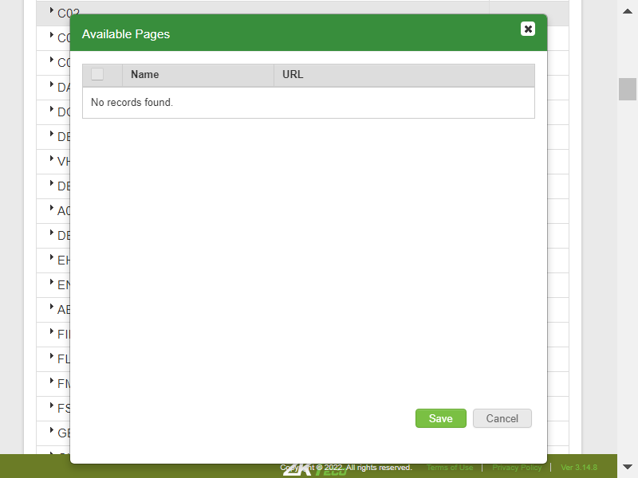To verify whether User is able to change permissions given to the accessible pages of the tenant role.com.zkteco.cirrusdcs.stepDefinitions.CirrusDCS.i_initialize_drivers_for_DCS_automation()Driver InitializedGiven I visit CirrusDCS HostLogin pageThen I visit CirrusDCS HostLogin with valid credentialsThen I click on the security and audit moduleThen I click on the tenant role submoduleThen I click on the particular tenant which is available in the tenant user roles blockTo verify whether User is able to Delete the accessible page for the Tenant Role.com.zkteco.cirrusdcs.stepDefinitions.CirrusDCS.i_initialize_drivers_for_DCS_automation()Driver InitializedGiven I visit CirrusDCS HostLogin pageThen I visit CirrusDCS HostLogin with valid credentialsThen I click on the security and audit moduleThen I click on the tenant role submoduleThen I click on the particular tenant which is available in the tenant user roles blockThen I select the particular tenant's tenant role and click on the edit buttonThen I click on the Add new available page under the Accessible pages blockStep skippedThen I view the respected Accessible page under the respected tenant roleStep skippedcom.zkteco.cirrusdcs.stepDefinitions.CirrusDCS.teardown(io.cucumber.java.Scenario)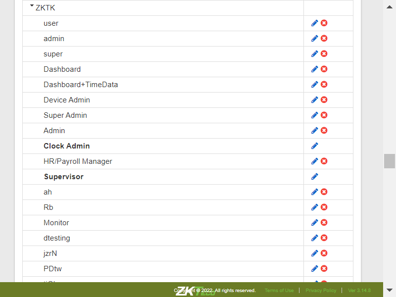To verify whether User is able to navigate to Security policy page.com.zkteco.cirrusdcs.stepDefinitions.CirrusDCS.i_initialize_drivers_for_DCS_automation()Driver InitializedGiven I visit CirrusDCS HostLogin pageThen I visit CirrusDCS HostLogin with valid credentialsThen I click on the security and audit moduleThen I click on the security policy submoduleThen I verify that user is able to view the all the available fields in the security policy submoduleTo verify whether User is able to change the password streangth.com.zkteco.cirrusdcs.stepDefinitions.CirrusDCS.i_initialize_drivers_for_DCS_automation()Driver InitializedGiven I visit CirrusDCS HostLogin pageThen I visit CirrusDCS HostLogin with valid credentialsThen I click on the security and audit moduleThen I click on the security policy submoduleThen I click on the password strength fieldsThen I verify user is able to view the all the option under in the password strength fieldcom.zkteco.cirrusdcs.stepDefinitions.CirrusDCS.teardown(io.cucumber.java.Scenario)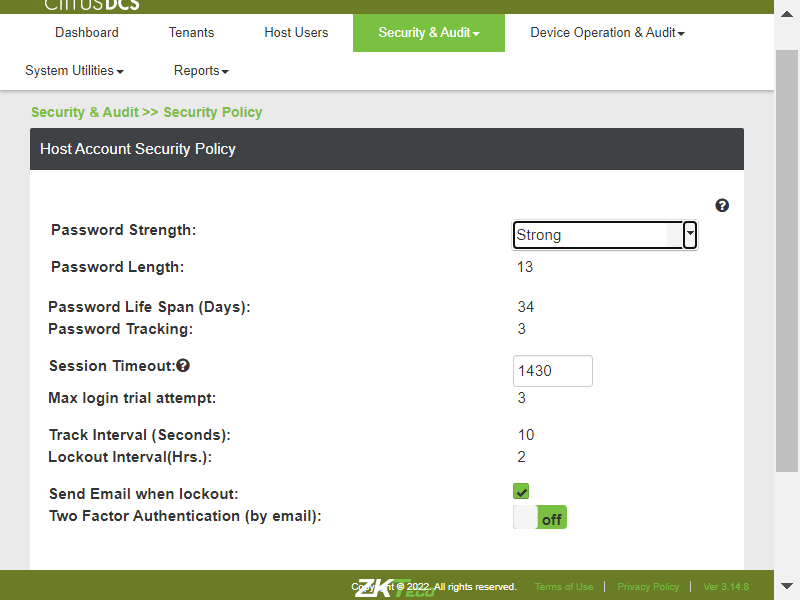To verify whether User is able to set password life span.com.zkteco.cirrusdcs.stepDefinitions.CirrusDCS.i_initialize_drivers_for_DCS_automation()Driver InitializedGiven I visit CirrusDCS HostLogin pageThen I visit CirrusDCS HostLogin with valid credentialsThen I click on the security and audit moduleThen I click on the security policy submoduleThen I click on the password life span daysThen I verify user is able to set the set password life span value as per the requirementcom.zkteco.cirrusdcs.stepDefinitions.CirrusDCS.teardown(io.cucumber.java.Scenario)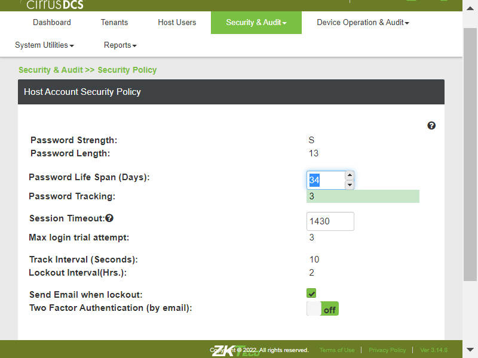To verify whether User is able to set the session Timeoutcom.zkteco.cirrusdcs.stepDefinitions.CirrusDCS.i_initialize_drivers_for_DCS_automation()Driver InitializedGiven I visit CirrusDCS HostLogin pageThen I visit CirrusDCS HostLogin with valid credentialsThen I click on the security and audit moduleThen I click on the security policy submoduleThen I click on the session time outThen I verify user is able to set the session time out value as per the requirementcom.zkteco.cirrusdcs.stepDefinitions.CirrusDCS.teardown(io.cucumber.java.Scenario)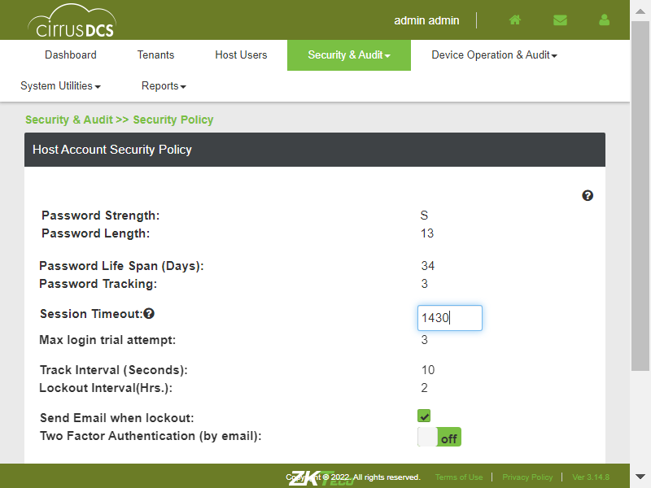To verify whether User is able to Set the Track interval timecom.zkteco.cirrusdcs.stepDefinitions.CirrusDCS.i_initialize_drivers_for_DCS_automation()Driver InitializedGiven I visit CirrusDCS HostLogin pageThen I visit CirrusDCS HostLogin with valid credentialsThen I click on the security and audit moduleThen I click on the security policy submoduleThen I click on the track intervalThen I verify user is able to set the track interval value as per the requirementcom.zkteco.cirrusdcs.stepDefinitions.CirrusDCS.teardown(io.cucumber.java.Scenario)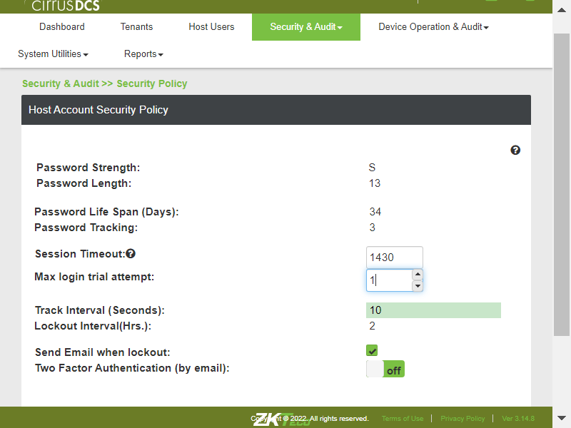To verify whether User is able to set the password length.com.zkteco.cirrusdcs.stepDefinitions.CirrusDCS.i_initialize_drivers_for_DCS_automation()Driver InitializedGiven I visit CirrusDCS HostLogin pageThen I visit CirrusDCS HostLogin with valid credentialsThen I click on the security and audit moduleThen I click on the security policy submoduleThen I click on the password lengthThen I verify user is able to set the password length value as per the requirementcom.zkteco.cirrusdcs.stepDefinitions.CirrusDCS.teardown(io.cucumber.java.Scenario) To verify whether set password length policy is reflecting in Host page.com.zkteco.cirrusdcs.stepDefinitions.CirrusDCS.i_initialize_drivers_for_DCS_automation()Driver InitializedGiven I visit CirrusDCS HostLogin pageThen I visit CirrusDCS HostLogin with valid credentialsThen I click on the security and audit moduleThen I click on the security policy submoduleThen I click on the password lengthThen I verify user is able to set the password length value as per the requirementThen I logout the DCS host accountStep skippedThen I visit CirrusDCS HostLogin with valid credentialsStep skippedThen I click on the Host Users moduleStep skippedThen I search the particular host user in the host users pageStep skippedThen I verify that user is able to view the set password length policy is reflecting in Host pageStep skippedcom.zkteco.cirrusdcs.stepDefinitions.CirrusDCS.teardown(io.cucumber.java.Scenario)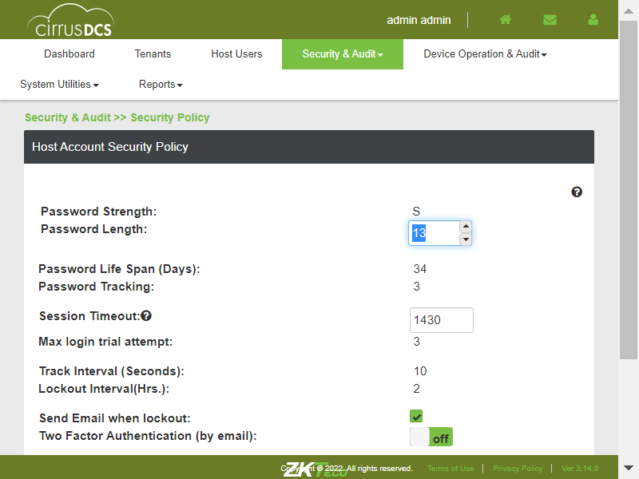To verify whether User is able to set Password Tracking.com.zkteco.cirrusdcs.stepDefinitions.CirrusDCS.i_initialize_drivers_for_DCS_automation()Driver InitializedGiven I visit CirrusDCS HostLogin pageThen I visit CirrusDCS HostLogin with valid credentialsThen I click on the security and audit moduleThen I click on the security policy submoduleThen I click on the password trackingThen I verify user is able to set the password traking value as per the requirementcom.zkteco.cirrusdcs.stepDefinitions.CirrusDCS.teardown(io.cucumber.java.Scenario)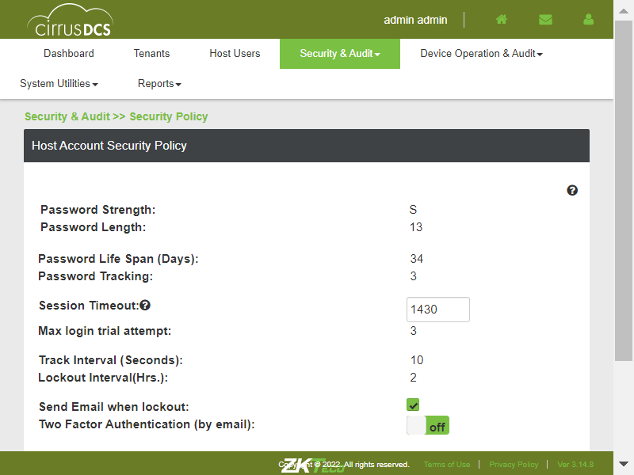To verify whether User is able to set the Max login trial attemptcom.zkteco.cirrusdcs.stepDefinitions.CirrusDCS.i_initialize_drivers_for_DCS_automation()Driver InitializedGiven I visit CirrusDCS HostLogin pageThen I visit CirrusDCS HostLogin with valid credentialsThen I click on the security and audit moduleThen I click on the security policy submoduleThen I click on the Max login trial attemptThen I verify user is able to set the password traking value as per the requirementcom.zkteco.cirrusdcs.stepDefinitions.CirrusDCS.teardown(io.cucumber.java.Scenario)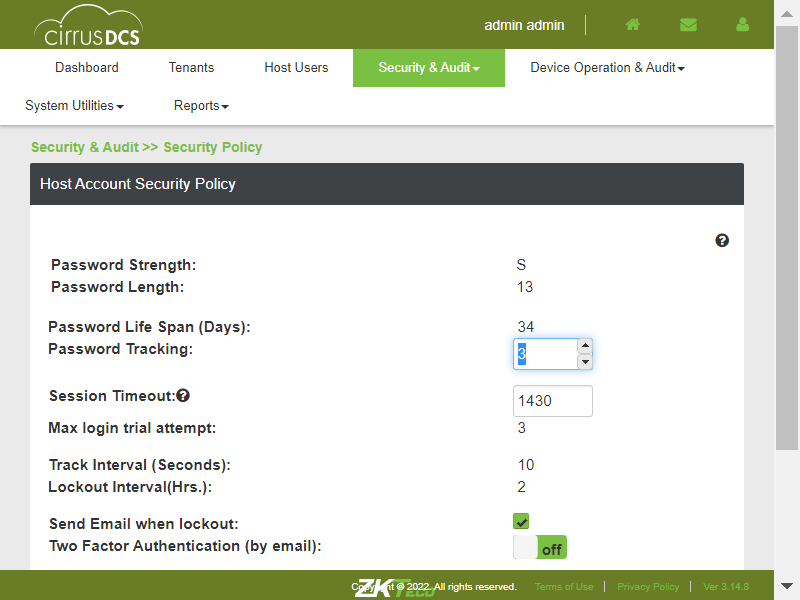To verify whether the account is locked after set number of Max incorrect login trial attemptcom.zkteco.cirrusdcs.stepDefinitions.CirrusDCS.i_initialize_drivers_for_DCS_automation()Driver InitializedGiven I visit CirrusDCS HostLogin pageThen I visit CirrusDCS HostLogin with valid credentialsThen I click on the security and audit moduleThen I click on the security policy submoduleThen I click on the Max login trial attemptThen I verify user is able to set the Max login trial attempt value as per the requirementThen I logout the DCS host accountStep skippedThen I visit CirrusDCS HostLogin with invalid credentialsStep skippedThen I verify that user is able to check that account is locked after set number of Max incorrect login trial attemptStep skippedcom.zkteco.cirrusdcs.stepDefinitions.CirrusDCS.teardown(io.cucumber.java.Scenario)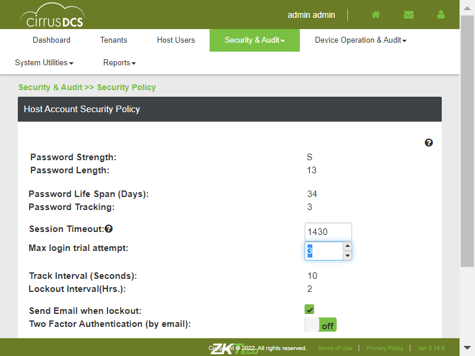To verify whether User is able to set the Lockout Intervalcom.zkteco.cirrusdcs.stepDefinitions.CirrusDCS.i_initialize_drivers_for_DCS_automation()Driver InitializedGiven I visit CirrusDCS HostLogin pageThen I visit CirrusDCS HostLogin with valid credentialsThen I click on the security and audit moduleThen I click on the security policy submoduleThen I click on the Lockout intervalThen I verify user is able to set the Lockout interval value as per the requirementcom.zkteco.cirrusdcs.stepDefinitions.CirrusDCS.teardown(io.cucumber.java.Scenario)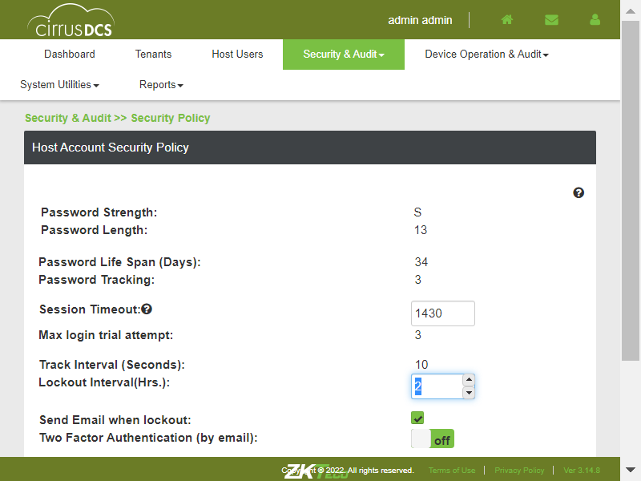To verify whether User is able to Set Two Factor Authentication (by email).com.zkteco.cirrusdcs.stepDefinitions.CirrusDCS.i_initialize_drivers_for_DCS_automation()Driver InitializedGiven I visit CirrusDCS HostLogin pageThen I visit CirrusDCS HostLogin with valid credentialsThen I click on the security and audit moduleThen I click on the security policy submoduleThen I click on the Two Factor Authentication by emailThen I verify user is able to set the Two Factor Authentication by email as per the requirementcom.zkteco.cirrusdcs.stepDefinitions.CirrusDCS.teardown(io.cucumber.java.Scenario)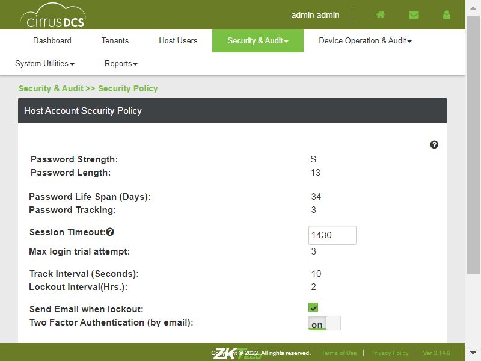To verify whether User is able to Set Two Factor Authentication (by email).com.zkteco.cirrusdcs.stepDefinitions.CirrusDCS.i_initialize_drivers_for_DCS_automation()Driver InitializedGiven I visit CirrusDCS HostLogin pageThen I visit CirrusDCS HostLogin with valid credentialsThen I click on the security and audit moduleThen I click on the security policy submoduleThen I click on the Send Email when lockout check boxThen I verify user is able to set the Send Email when lockout check box toggle button as per the requirementcom.zkteco.cirrusdcs.stepDefinitions.CirrusDCS.teardown(io.cucumber.java.Scenario)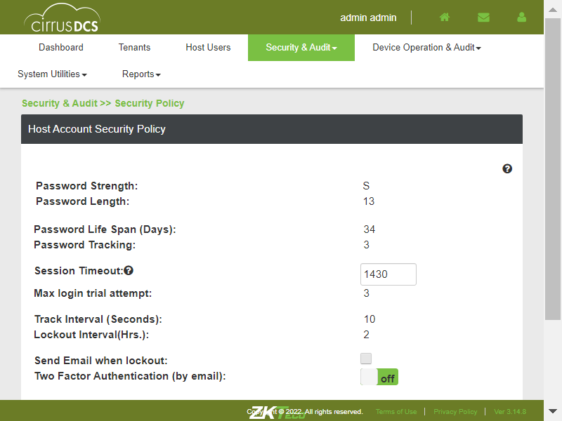To verify whether User is able to navigate to Active Login Users page.com.zkteco.cirrusdcs.stepDefinitions.CirrusDCS.i_initialize_drivers_for_DCS_automation()Driver InitializedGiven I visit CirrusDCS HostLogin pageThen I visit CirrusDCS HostLogin with valid credentialsThen I click on the security and audit moduleThen I click on the Active login users submoduleThen I verify user is able to view the all the fieds under the Active login users pageTo verify whether User is able to view login Users and their details in Login User Table.com.zkteco.cirrusdcs.stepDefinitions.CirrusDCS.i_initialize_drivers_for_DCS_automation()Driver InitializedGiven I visit CirrusDCS HostLogin pageThen I visit CirrusDCS HostLogin with valid credentialsThen I click on the security and audit moduleThen I click on the Active login users submoduleThen I verify user is able to view the login Users and their details in Login User TableTo verify whether User is able to search User with User Account ID.com.zkteco.cirrusdcs.stepDefinitions.CirrusDCS.i_initialize_drivers_for_DCS_automation()Driver InitializedGiven I visit CirrusDCS HostLogin pageThen I visit CirrusDCS HostLogin with valid credentialsThen I click on the security and audit moduleThen I click on the Active login users submoduleThen I verify that user is able to search the account id by the account id search fieldTo verify whether User is able to search User with User namecom.zkteco.cirrusdcs.stepDefinitions.CirrusDCS.i_initialize_drivers_for_DCS_automation()Driver InitializedGiven I visit CirrusDCS HostLogin pageThen I visit CirrusDCS HostLogin with valid credentialsThen I click on the security and audit moduleThen I click on the Active login users submoduleThen I verify that user is able to search the User by the User name search fieldTo verify whether User is able to logoff login Usercom.zkteco.cirrusdcs.stepDefinitions.CirrusDCS.i_initialize_drivers_for_DCS_automation()Driver InitializedGiven I visit CirrusDCS HostLogin pageThen I visit CirrusDCS HostLogin with valid credentialsThen I click on the security and audit moduleThen I click on the Active login users submoduleThen I verify that User is able to logoff login UserTo verify whether User is able to Export Active Login Users details as CSV filecom.zkteco.cirrusdcs.stepDefinitions.CirrusDCS.i_initialize_drivers_for_DCS_automation()Driver InitializedGiven I visit CirrusDCS HostLogin pageThen I visit CirrusDCS HostLogin with valid credentialsThen I click on the security and audit moduleThen I click on the Active login users submoduleThen I verify that User is able to Download Active Logi Users details as CSV File formatTo verify whether User is able to Export Active Login Users details as PDF filecom.zkteco.cirrusdcs.stepDefinitions.CirrusDCS.i_initialize_drivers_for_DCS_automation()Driver InitializedGiven I visit CirrusDCS HostLogin pageThen I visit CirrusDCS HostLogin with valid credentialsThen I click on the security and audit moduleThen I click on the Active login users submoduleThen I verify that User is able to Download Active Logi Users details as PDF File formatTo verify whether User is able to Export Active Login Users details as excel filecom.zkteco.cirrusdcs.stepDefinitions.CirrusDCS.i_initialize_drivers_for_DCS_automation()Driver InitializedGiven I visit CirrusDCS HostLogin pageThen I visit CirrusDCS HostLogin with valid credentialsThen I click on the security and audit moduleThen I click on the Active login users submoduleThen I verify that User is able to Download Active Logi Users details as Excel File formatTo verify whether User is able to view recently logged in Userscom.zkteco.cirrusdcs.stepDefinitions.CirrusDCS.i_initialize_drivers_for_DCS_automation()Driver InitializedGiven I visit CirrusDCS HostLogin pageThen I visit CirrusDCS HostLogin with valid credentialsThen I click on the security and audit moduleThen I click on the Active login users submoduleThen I verify that User is able to view recently logged in UsersTo verify whether User is able to navigate to Host User Audit page.com.zkteco.cirrusdcs.stepDefinitions.CirrusDCS.i_initialize_drivers_for_DCS_automation()Driver InitializedGiven I visit CirrusDCS HostLogin pageThen I visit CirrusDCS HostLogin with valid credentialsThen I click on the security and audit moduleThen I click on the Host user Audit submoduleThen I verify that User is able to view the all the field which is available on the Host User Audit pageTo verify whether User is able to search User details by Datecom.zkteco.cirrusdcs.stepDefinitions.CirrusDCS.i_initialize_drivers_for_DCS_automation()Driver InitializedGiven I visit CirrusDCS HostLogin pageThen I visit CirrusDCS HostLogin with valid credentialsThen I click on the security and audit moduleThen I click on the Host user Audit submoduleThen I verify that User is able to search User details by DateTo verify whether User is able to Search the User by entering Usernamecom.zkteco.cirrusdcs.stepDefinitions.CirrusDCS.i_initialize_drivers_for_DCS_automation()Driver InitializedGiven I visit CirrusDCS HostLogin pageThen I visit CirrusDCS HostLogin with valid credentialsThen I click on the security and audit moduleThen I click on the Host user Audit submoduleThen I verify that User is able to search User details by entering UsernameTo verify whether User is able to Export Host User Audit details as CSV file.com.zkteco.cirrusdcs.stepDefinitions.CirrusDCS.i_initialize_drivers_for_DCS_automation()Driver InitializedGiven I visit CirrusDCS HostLogin pageThen I visit CirrusDCS HostLogin with valid credentialsThen I click on the security and audit moduleThen I click on the Host user Audit submoduleThen I verify that User is able to Export Host User Audit details as CSV fileTo verify whether User is able to Export Host User Audit details as PDF file.com.zkteco.cirrusdcs.stepDefinitions.CirrusDCS.i_initialize_drivers_for_DCS_automation()Driver InitializedGiven I visit CirrusDCS HostLogin pageThen I visit CirrusDCS HostLogin with valid credentialsThen I click on the security and audit moduleThen I click on the Host user Audit submoduleThen I verify that User is able to Export Host User Audit details as PDF fileTo verify whether User is able to Export Host User Audit details as Excel file.com.zkteco.cirrusdcs.stepDefinitions.CirrusDCS.i_initialize_drivers_for_DCS_automation()Driver InitializedGiven I visit CirrusDCS HostLogin pageThen I visit CirrusDCS HostLogin with valid credentialsThen I click on the security and audit moduleThen I click on the Host user Audit submoduleThen I verify that User is able to Export Host User Audit details as Excel fileTo verify whether User is able to navigate to Login audit pagecom.zkteco.cirrusdcs.stepDefinitions.CirrusDCS.i_initialize_drivers_for_DCS_automation()Driver InitializedGiven I visit CirrusDCS HostLogin pageThen I visit CirrusDCS HostLogin with valid credentialsThen I click on the security and audit moduleThen I click on the Login Audit submoduleThen I verify that User is able to view the all the fields which are available on the Login Audit pageTo verify whether User is able to view login Users by Datecom.zkteco.cirrusdcs.stepDefinitions.CirrusDCS.i_initialize_drivers_for_DCS_automation()Driver InitializedGiven I visit CirrusDCS HostLogin pageThen I visit CirrusDCS HostLogin with valid credentialsThen I click on the security and audit moduleThen I click on the Login Audit submoduleThen I verify that User is able to search login Users details by Datecom.zkteco.cirrusdcs.stepDefinitions.CirrusDCS.teardown(io.cucumber.java.Scenario)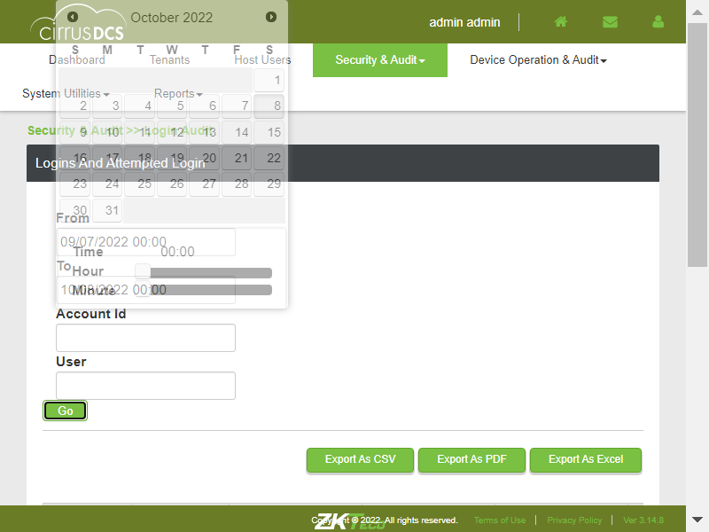To verify whether User is able to Filter User by Account IDcom.zkteco.cirrusdcs.stepDefinitions.CirrusDCS.i_initialize_drivers_for_DCS_automation()Driver InitializedGiven I visit CirrusDCS HostLogin pageThen I visit CirrusDCS HostLogin with valid credentialsThen I click on the security and audit moduleThen I click on the Login Audit submoduleThen I verify that User is able to search login Users details by Account IDTo verify whether User is able to Filter User by User namecom.zkteco.cirrusdcs.stepDefinitions.CirrusDCS.i_initialize_drivers_for_DCS_automation()Driver InitializedGiven I visit CirrusDCS HostLogin pageThen I visit CirrusDCS HostLogin with valid credentialsThen I click on the security and audit moduleThen I click on the Login Audit submoduleThen I verify that User is able to search login Users details by User nameTo verify whether User is able to view Failed login attempted detailscom.zkteco.cirrusdcs.stepDefinitions.CirrusDCS.i_initialize_drivers_for_DCS_automation()Driver InitializedGiven I visit CirrusDCS HostLogin pageThen I visit CirrusDCS HostLogin with valid credentialsThen I click on the security and audit moduleThen I click on the Login Audit submoduleThen I verify that User is able to view the failed login attempted detailsTo verify whether User is able To Export Login Audit details as CSV file.com.zkteco.cirrusdcs.stepDefinitions.CirrusDCS.i_initialize_drivers_for_DCS_automation()Driver InitializedGiven I visit CirrusDCS HostLogin pageThen I visit CirrusDCS HostLogin with valid credentialsThen I click on the security and audit moduleThen I click on the Login Audit submoduleThen I verify that User is able to Export Login Audit details as CSV fileTo verify whether User is able To Export Login Audit details as PDF file.com.zkteco.cirrusdcs.stepDefinitions.CirrusDCS.i_initialize_drivers_for_DCS_automation()Driver InitializedGiven I visit CirrusDCS HostLogin pageThen I visit CirrusDCS HostLogin with valid credentialsThen I click on the security and audit moduleThen I click on the Login Audit submoduleThen I verify that User is able to Export Login Audit details as PDF fileTo verify whether User is able To Export Login Audit details as EXCEL file.com.zkteco.cirrusdcs.stepDefinitions.CirrusDCS.i_initialize_drivers_for_DCS_automation()Driver InitializedGiven I visit CirrusDCS HostLogin pageThen I visit CirrusDCS HostLogin with valid credentialsThen I click on the security and audit moduleThen I click on the Login Audit submoduleThen I verify that User is able to Export Login Audit details as EXCEL fileTo verify whether User is able to navigate to Expired Accounts pagecom.zkteco.cirrusdcs.stepDefinitions.CirrusDCS.i_initialize_drivers_for_DCS_automation()Driver InitializedGiven I visit CirrusDCS HostLogin pageThen I visit CirrusDCS HostLogin with valid credentialsThen I click on the security and audit moduleThen I click on the Expired Accounts submoduleThen I verify that User is able to view the all the fields which are available on the Expired Accounts pageTo verify whether User is able to view details of Account expired.com.zkteco.cirrusdcs.stepDefinitions.CirrusDCS.i_initialize_drivers_for_DCS_automation()Driver InitializedGiven I visit CirrusDCS HostLogin pageThen I visit CirrusDCS HostLogin with valid credentialsThen I click on the security and audit moduleThen I click on the Expired Accounts submoduleThen I verify that User is able to view details of Account expiredStep skippedcom.zkteco.cirrusdcs.stepDefinitions.CirrusDCS.teardown(io.cucumber.java.Scenario)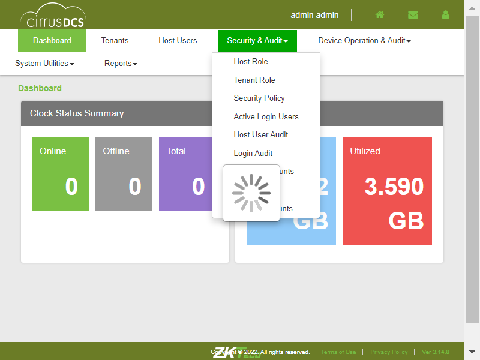To verify whether User is able to Export Expired Accounts details as CSV file.com.zkteco.cirrusdcs.stepDefinitions.CirrusDCS.i_initialize_drivers_for_DCS_automation()Driver InitializedGiven I visit CirrusDCS HostLogin pageThen I visit CirrusDCS HostLogin with valid credentialsThen I click on the security and audit moduleThen I click on the Expired Accounts submoduleThen I verify that User is able to Export Expired Accounts details as CSV fileTo verify whether User is able to Export Expired Accounts details as PDF file.com.zkteco.cirrusdcs.stepDefinitions.CirrusDCS.i_initialize_drivers_for_DCS_automation()Driver InitializedGiven I visit CirrusDCS HostLogin pageThen I visit CirrusDCS HostLogin with valid credentialsThen I click on the security and audit moduleThen I click on the Expired Accounts submoduleThen I verify that User is able to Export Expired Accounts details as PDF fileTo verify whether User is able to Export Expired Accounts details as EXCEL file.com.zkteco.cirrusdcs.stepDefinitions.CirrusDCS.i_initialize_drivers_for_DCS_automation()Driver InitializedGiven I visit CirrusDCS HostLogin pageThen I visit CirrusDCS HostLogin with valid credentialsThen I click on the security and audit moduleThen I click on the Expired Accounts submoduleThen I verify that User is able to Export Expired Accounts details as EXCEL fileStep skippedcom.zkteco.cirrusdcs.stepDefinitions.CirrusDCS.teardown(io.cucumber.java.Scenario)To verify whether user is able to Navigate to Events page.com.zkteco.cirrusdcs.stepDefinitions.CirrusDCS.i_initialize_drivers_for_DCS_automation()Driver InitializedGiven I visit CirrusDCS HostLogin pageThen I visit CirrusDCS HostLogin with valid credentialsThen I click on the security and audit moduleThen I click on the Events submoduleThen I verify that User is able to view the all the fields which are available on the Events pageStep skippedcom.zkteco.cirrusdcs.stepDefinitions.CirrusDCS.teardown(io.cucumber.java.Scenario)
To verify whether set password length policy is reflecting in Host page.com.zkteco.cirrusdcs.stepDefinitions.CirrusDCS.i_initialize_drivers_for_DCS_automation()Driver InitializedGiven I visit CirrusDCS HostLogin pageThen I visit CirrusDCS HostLogin with valid credentialsThen I click on the security and audit moduleThen I click on the security policy submoduleThen I click on the password lengthThen I verify user is able to set the password length value as per the requirementThen I logout the DCS host accountStep skippedThen I visit CirrusDCS HostLogin with valid credentialsStep skippedThen I click on the Host Users moduleStep skippedThen I search the particular host user in the host users pageStep skippedThen I verify that user is able to view the set password length policy is reflecting in Host pageStep skippedcom.zkteco.cirrusdcs.stepDefinitions.CirrusDCS.teardown(io.cucumber.java.Scenario)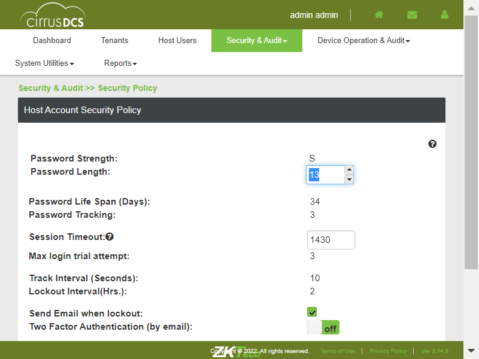To verify whether User is able to set Password Tracking.com.zkteco.cirrusdcs.stepDefinitions.CirrusDCS.i_initialize_drivers_for_DCS_automation()Driver InitializedGiven I visit CirrusDCS HostLogin pageThen I visit CirrusDCS HostLogin with valid credentialsThen I click on the security and audit moduleThen I click on the security policy submoduleThen I click on the password trackingThen I verify user is able to set the password traking value as per the requirementcom.zkteco.cirrusdcs.stepDefinitions.CirrusDCS.teardown(io.cucumber.java.Scenario)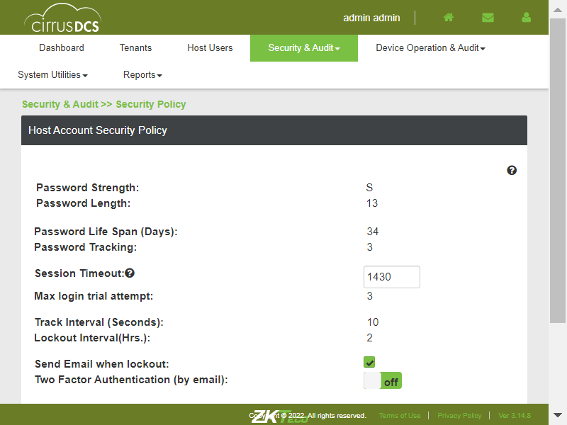To verify whether User is able to set the Max login trial attemptcom.zkteco.cirrusdcs.stepDefinitions.CirrusDCS.i_initialize_drivers_for_DCS_automation()Driver InitializedGiven I visit CirrusDCS HostLogin pageThen I visit CirrusDCS HostLogin with valid credentialsThen I click on the security and audit moduleThen I click on the security policy submoduleThen I click on the Max login trial attemptThen I verify user is able to set the password traking value as per the requirementcom.zkteco.cirrusdcs.stepDefinitions.CirrusDCS.teardown(io.cucumber.java.Scenario)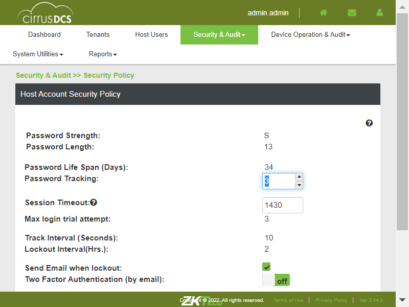To verify whether the account is locked after set number of Max incorrect login trial attemptcom.zkteco.cirrusdcs.stepDefinitions.CirrusDCS.i_initialize_drivers_for_DCS_automation()Driver InitializedGiven I visit CirrusDCS HostLogin pageThen I visit CirrusDCS HostLogin with valid credentialsThen I click on the security and audit moduleThen I click on the security policy submoduleThen I click on the Max login trial attemptThen I verify user is able to set the Max login trial attempt value as per the requirementThen I logout the DCS host accountStep skippedThen I visit CirrusDCS HostLogin with invalid credentialsStep skippedThen I verify that user is able to check that account is locked after set number of Max incorrect login trial attemptStep skippedcom.zkteco.cirrusdcs.stepDefinitions.CirrusDCS.teardown(io.cucumber.java.Scenario)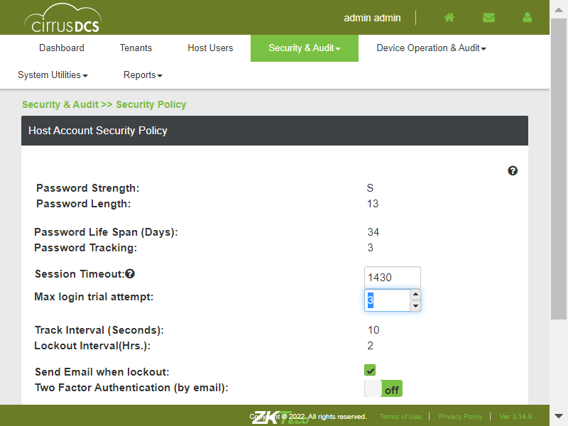To verify whether User is able to set the Lockout Intervalcom.zkteco.cirrusdcs.stepDefinitions.CirrusDCS.i_initialize_drivers_for_DCS_automation()Driver InitializedGiven I visit CirrusDCS HostLogin pageThen I visit CirrusDCS HostLogin with valid credentialsThen I click on the security and audit moduleThen I click on the security policy submoduleThen I click on the Lockout intervalThen I verify user is able to set the Lockout interval value as per the requirementcom.zkteco.cirrusdcs.stepDefinitions.CirrusDCS.teardown(io.cucumber.java.Scenario)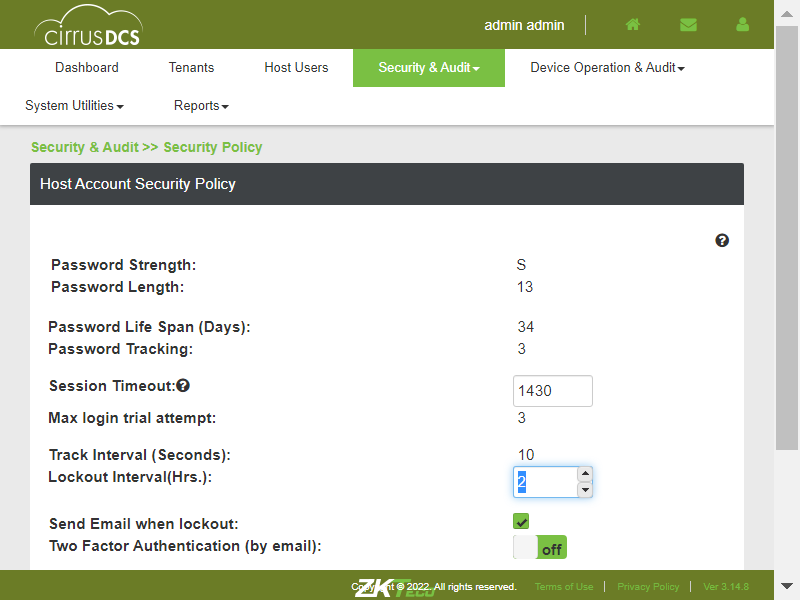To verify whether User is able to Set Two Factor Authentication (by email).com.zkteco.cirrusdcs.stepDefinitions.CirrusDCS.i_initialize_drivers_for_DCS_automation()Driver InitializedGiven I visit CirrusDCS HostLogin pageThen I visit CirrusDCS HostLogin with valid credentialsThen I click on the security and audit moduleThen I click on the security policy submoduleThen I click on the Two Factor Authentication by emailThen I verify user is able to set the Two Factor Authentication by email as per the requirementcom.zkteco.cirrusdcs.stepDefinitions.CirrusDCS.teardown(io.cucumber.java.Scenario)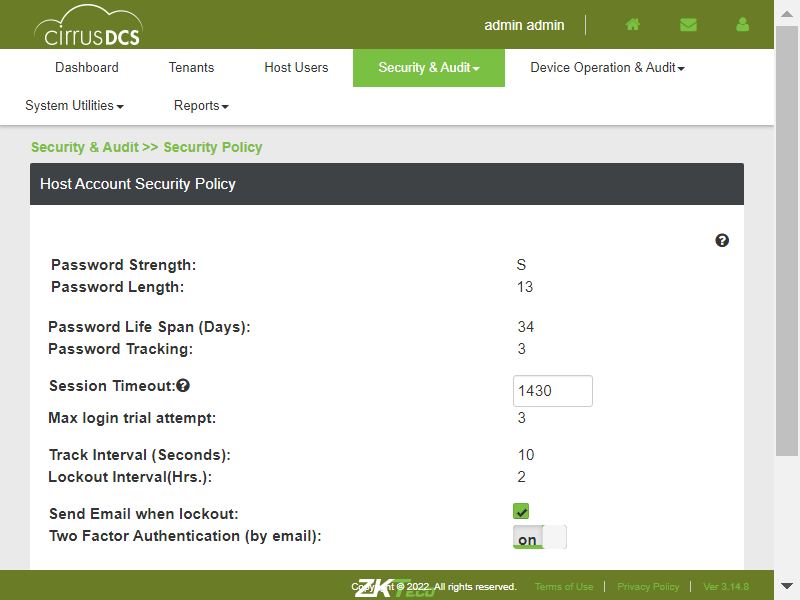To verify whether User is able to Set Two Factor Authentication (by email).com.zkteco.cirrusdcs.stepDefinitions.CirrusDCS.i_initialize_drivers_for_DCS_automation()Driver InitializedGiven I visit CirrusDCS HostLogin pageThen I visit CirrusDCS HostLogin with valid credentialsThen I click on the security and audit moduleThen I click on the security policy submoduleThen I click on the Send Email when lockout check boxThen I verify user is able to set the Send Email when lockout check box toggle button as per the requirementcom.zkteco.cirrusdcs.stepDefinitions.CirrusDCS.teardown(io.cucumber.java.Scenario)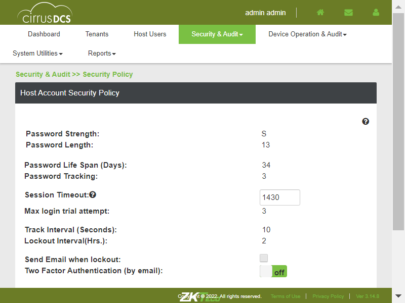To verify whether User is able to navigate to Active Login Users page.com.zkteco.cirrusdcs.stepDefinitions.CirrusDCS.i_initialize_drivers_for_DCS_automation()Driver InitializedGiven I visit CirrusDCS HostLogin pageThen I visit CirrusDCS HostLogin with valid credentialsThen I click on the security and audit moduleThen I click on the Active login users submoduleThen I verify user is able to view the all the fieds under the Active login users pageTo verify whether User is able to view login Users and their details in Login User Table.com.zkteco.cirrusdcs.stepDefinitions.CirrusDCS.i_initialize_drivers_for_DCS_automation()Driver InitializedGiven I visit CirrusDCS HostLogin pageThen I visit CirrusDCS HostLogin with valid credentialsThen I click on the security and audit moduleThen I click on the Active login users submoduleThen I verify user is able to view the login Users and their details in Login User TableTo verify whether User is able to search User with User Account ID.com.zkteco.cirrusdcs.stepDefinitions.CirrusDCS.i_initialize_drivers_for_DCS_automation()Driver InitializedGiven I visit CirrusDCS HostLogin pageThen I visit CirrusDCS HostLogin with valid credentialsThen I click on the security and audit moduleThen I click on the Active login users submoduleThen I verify that user is able to search the account id by the account id search fieldTo verify whether User is able to search User with User namecom.zkteco.cirrusdcs.stepDefinitions.CirrusDCS.i_initialize_drivers_for_DCS_automation()Driver InitializedGiven I visit CirrusDCS HostLogin pageThen I visit CirrusDCS HostLogin with valid credentialsThen I click on the security and audit moduleThen I click on the Active login users submoduleThen I verify that user is able to search the User by the User name search fieldTo verify whether User is able to logoff login Usercom.zkteco.cirrusdcs.stepDefinitions.CirrusDCS.i_initialize_drivers_for_DCS_automation()Driver InitializedGiven I visit CirrusDCS HostLogin pageThen I visit CirrusDCS HostLogin with valid credentialsThen I click on the security and audit moduleThen I click on the Active login users submoduleThen I verify that User is able to logoff login UserTo verify whether User is able to Export Active Login Users details as CSV filecom.zkteco.cirrusdcs.stepDefinitions.CirrusDCS.i_initialize_drivers_for_DCS_automation()Driver InitializedGiven I visit CirrusDCS HostLogin pageThen I visit CirrusDCS HostLogin with valid credentialsThen I click on the security and audit moduleThen I click on the Active login users submoduleThen I verify that User is able to Download Active Logi Users details as CSV File formatTo verify whether User is able to Export Active Login Users details as PDF filecom.zkteco.cirrusdcs.stepDefinitions.CirrusDCS.i_initialize_drivers_for_DCS_automation()Driver InitializedGiven I visit CirrusDCS HostLogin pageThen I visit CirrusDCS HostLogin with valid credentialsThen I click on the security and audit moduleThen I click on the Active login users submoduleThen I verify that User is able to Download Active Logi Users details as PDF File formatTo verify whether User is able to Export Active Login Users details as excel filecom.zkteco.cirrusdcs.stepDefinitions.CirrusDCS.i_initialize_drivers_for_DCS_automation()Driver InitializedGiven I visit CirrusDCS HostLogin pageThen I visit CirrusDCS HostLogin with valid credentialsThen I click on the security and audit moduleThen I click on the Active login users submoduleThen I verify that User is able to Download Active Logi Users details as Excel File formatTo verify whether User is able to view recently logged in Userscom.zkteco.cirrusdcs.stepDefinitions.CirrusDCS.i_initialize_drivers_for_DCS_automation()Driver InitializedGiven I visit CirrusDCS HostLogin pageThen I visit CirrusDCS HostLogin with valid credentialsThen I click on the security and audit moduleThen I click on the Active login users submoduleThen I verify that User is able to view recently logged in UsersTo verify whether User is able to navigate to Host User Audit page.com.zkteco.cirrusdcs.stepDefinitions.CirrusDCS.i_initialize_drivers_for_DCS_automation()Driver InitializedGiven I visit CirrusDCS HostLogin pageThen I visit CirrusDCS HostLogin with valid credentialsThen I click on the security and audit moduleThen I click on the Host user Audit submoduleThen I verify that User is able to view the all the field which is available on the Host User Audit pageTo verify whether User is able to search User details by Datecom.zkteco.cirrusdcs.stepDefinitions.CirrusDCS.i_initialize_drivers_for_DCS_automation()Driver InitializedGiven I visit CirrusDCS HostLogin pageThen I visit CirrusDCS HostLogin with valid credentialsThen I click on the security and audit moduleThen I click on the Host user Audit submoduleThen I verify that User is able to search User details by DateTo verify whether User is able to Search the User by entering Usernamecom.zkteco.cirrusdcs.stepDefinitions.CirrusDCS.i_initialize_drivers_for_DCS_automation()Driver InitializedGiven I visit CirrusDCS HostLogin pageThen I visit CirrusDCS HostLogin with valid credentialsThen I click on the security and audit moduleThen I click on the Host user Audit submoduleThen I verify that User is able to search User details by entering UsernameTo verify whether User is able to Export Host User Audit details as CSV file.com.zkteco.cirrusdcs.stepDefinitions.CirrusDCS.i_initialize_drivers_for_DCS_automation()Driver InitializedGiven I visit CirrusDCS HostLogin pageThen I visit CirrusDCS HostLogin with valid credentialsThen I click on the security and audit moduleThen I click on the Host user Audit submoduleThen I verify that User is able to Export Host User Audit details as CSV fileTo verify whether User is able to Export Host User Audit details as PDF file.com.zkteco.cirrusdcs.stepDefinitions.CirrusDCS.i_initialize_drivers_for_DCS_automation()Driver InitializedGiven I visit CirrusDCS HostLogin pageThen I visit CirrusDCS HostLogin with valid credentialsThen I click on the security and audit moduleThen I click on the Host user Audit submoduleThen I verify that User is able to Export Host User Audit details as PDF fileTo verify whether User is able to Export Host User Audit details as Excel file.com.zkteco.cirrusdcs.stepDefinitions.CirrusDCS.i_initialize_drivers_for_DCS_automation()Driver InitializedGiven I visit CirrusDCS HostLogin pageThen I visit CirrusDCS HostLogin with valid credentialsThen I click on the security and audit moduleThen I click on the Host user Audit submoduleThen I verify that User is able to Export Host User Audit details as Excel fileTo verify whether User is able to navigate to Login audit pagecom.zkteco.cirrusdcs.stepDefinitions.CirrusDCS.i_initialize_drivers_for_DCS_automation()Driver InitializedGiven I visit CirrusDCS HostLogin pageThen I visit CirrusDCS HostLogin with valid credentialsThen I click on the security and audit moduleThen I click on the Login Audit submoduleThen I verify that User is able to view the all the fields which are available on the Login Audit pageTo verify whether User is able to view login Users by Datecom.zkteco.cirrusdcs.stepDefinitions.CirrusDCS.i_initialize_drivers_for_DCS_automation()Driver InitializedGiven I visit CirrusDCS HostLogin pageThen I visit CirrusDCS HostLogin with valid credentialsThen I click on the security and audit moduleThen I click on the Login Audit submoduleThen I verify that User is able to search login Users details by Datecom.zkteco.cirrusdcs.stepDefinitions.CirrusDCS.teardown(io.cucumber.java.Scenario)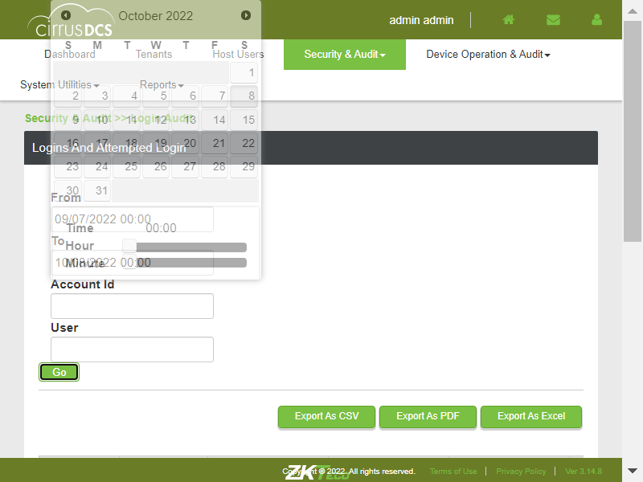To verify whether User is able to Filter User by Account IDcom.zkteco.cirrusdcs.stepDefinitions.CirrusDCS.i_initialize_drivers_for_DCS_automation()Driver InitializedGiven I visit CirrusDCS HostLogin pageThen I visit CirrusDCS HostLogin with valid credentialsThen I click on the security and audit moduleThen I click on the Login Audit submoduleThen I verify that User is able to search login Users details by Account IDTo verify whether User is able to Filter User by User namecom.zkteco.cirrusdcs.stepDefinitions.CirrusDCS.i_initialize_drivers_for_DCS_automation()Driver InitializedGiven I visit CirrusDCS HostLogin pageThen I visit CirrusDCS HostLogin with valid credentialsThen I click on the security and audit moduleThen I click on the Login Audit submoduleThen I verify that User is able to search login Users details by User nameTo verify whether User is able to view Failed login attempted detailscom.zkteco.cirrusdcs.stepDefinitions.CirrusDCS.i_initialize_drivers_for_DCS_automation()Driver InitializedGiven I visit CirrusDCS HostLogin pageThen I visit CirrusDCS HostLogin with valid credentialsThen I click on the security and audit moduleThen I click on the Login Audit submoduleThen I verify that User is able to view the failed login attempted detailsTo verify whether User is able To Export Login Audit details as CSV file.com.zkteco.cirrusdcs.stepDefinitions.CirrusDCS.i_initialize_drivers_for_DCS_automation()Driver InitializedGiven I visit CirrusDCS HostLogin pageThen I visit CirrusDCS HostLogin with valid credentialsThen I click on the security and audit moduleThen I click on the Login Audit submoduleThen I verify that User is able to Export Login Audit details as CSV fileTo verify whether User is able To Export Login Audit details as PDF file.com.zkteco.cirrusdcs.stepDefinitions.CirrusDCS.i_initialize_drivers_for_DCS_automation()Driver InitializedGiven I visit CirrusDCS HostLogin pageThen I visit CirrusDCS HostLogin with valid credentialsThen I click on the security and audit moduleThen I click on the Login Audit submoduleThen I verify that User is able to Export Login Audit details as PDF fileTo verify whether User is able To Export Login Audit details as EXCEL file.com.zkteco.cirrusdcs.stepDefinitions.CirrusDCS.i_initialize_drivers_for_DCS_automation()Driver InitializedGiven I visit CirrusDCS HostLogin pageThen I visit CirrusDCS HostLogin with valid credentialsThen I click on the security and audit moduleThen I click on the Login Audit submoduleThen I verify that User is able to Export Login Audit details as EXCEL fileTo verify whether User is able to navigate to Expired Accounts pagecom.zkteco.cirrusdcs.stepDefinitions.CirrusDCS.i_initialize_drivers_for_DCS_automation()Driver InitializedGiven I visit CirrusDCS HostLogin pageThen I visit CirrusDCS HostLogin with valid credentialsThen I click on the security and audit moduleThen I click on the Expired Accounts submoduleThen I verify that User is able to view the all the fields which are available on the Expired Accounts pageTo verify whether User is able to view details of Account expired.com.zkteco.cirrusdcs.stepDefinitions.CirrusDCS.i_initialize_drivers_for_DCS_automation()Driver InitializedGiven I visit CirrusDCS HostLogin pageThen I visit CirrusDCS HostLogin with valid credentialsThen I click on the security and audit moduleThen I click on the Expired Accounts submoduleThen I verify that User is able to view details of Account expiredStep skippedcom.zkteco.cirrusdcs.stepDefinitions.CirrusDCS.teardown(io.cucumber.java.Scenario)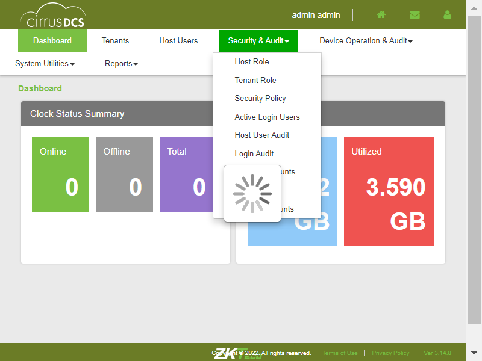To verify whether User is able to Export Expired Accounts details as CSV file.com.zkteco.cirrusdcs.stepDefinitions.CirrusDCS.i_initialize_drivers_for_DCS_automation()Driver InitializedGiven I visit CirrusDCS HostLogin pageThen I visit CirrusDCS HostLogin with valid credentialsThen I click on the security and audit moduleThen I click on the Expired Accounts submoduleThen I verify that User is able to Export Expired Accounts details as CSV fileTo verify whether User is able to Export Expired Accounts details as PDF file.com.zkteco.cirrusdcs.stepDefinitions.CirrusDCS.i_initialize_drivers_for_DCS_automation()Driver InitializedGiven I visit CirrusDCS HostLogin pageThen I visit CirrusDCS HostLogin with valid credentialsThen I click on the security and audit moduleThen I click on the Expired Accounts submoduleThen I verify that User is able to Export Expired Accounts details as PDF fileTo verify whether User is able to Export Expired Accounts details as EXCEL file.com.zkteco.cirrusdcs.stepDefinitions.CirrusDCS.i_initialize_drivers_for_DCS_automation()Driver InitializedGiven I visit CirrusDCS HostLogin pageThen I visit CirrusDCS HostLogin with valid credentialsThen I click on the security and audit moduleThen I click on the Expired Accounts submoduleThen I verify that User is able to Export Expired Accounts details as EXCEL fileStep skippedcom.zkteco.cirrusdcs.stepDefinitions.CirrusDCS.teardown(io.cucumber.java.Scenario)To verify whether user is able to Navigate to Events page.com.zkteco.cirrusdcs.stepDefinitions.CirrusDCS.i_initialize_drivers_for_DCS_automation()Driver InitializedGiven I visit CirrusDCS HostLogin pageThen I visit CirrusDCS HostLogin with valid credentialsThen I click on the security and audit moduleThen I click on the Events submoduleThen I verify that User is able to view the all the fields which are available on the Events pageStep skippedcom.zkteco.cirrusdcs.stepDefinitions.CirrusDCS.teardown(io.cucumber.java.Scenario) To verify whether user is able to observe Event ocuured in Events Tablecom.zkteco.cirrusdcs.stepDefinitions.CirrusDCS.i_initialize_drivers_for_DCS_automation()Driver InitializedGiven I visit CirrusDCS HostLogin pageThen I visit CirrusDCS HostLogin with valid credentialsThen I click on the security and audit moduleThen I click on the Events submoduleThen I verify that User is able to observe Event ocuured in Events TableTo verify whether user is able to delete individual event messagecom.zkteco.cirrusdcs.stepDefinitions.CirrusDCS.i_initialize_drivers_for_DCS_automation()Driver InitializedGiven I visit CirrusDCS HostLogin pageThen I visit CirrusDCS HostLogin with valid credentialsThen I click on the security and audit moduleThen I click on the Events submoduleThen I verify that User is able to delete individual event messageStep skippedcom.zkteco.cirrusdcs.stepDefinitions.CirrusDCS.teardown(io.cucumber.java.Scenario)To verify whether user is able to delete mulitple events message at oncecom.zkteco.cirrusdcs.stepDefinitions.CirrusDCS.i_initialize_drivers_for_DCS_automation()Driver InitializedGiven I visit CirrusDCS HostLogin pageThen I visit CirrusDCS HostLogin with valid credentialsThen I click on the security and audit moduleThen I click on the Events submoduleThen I verify that User is able to delete mulitple events message at oncecom.zkteco.cirrusdcs.stepDefinitions.CirrusDCS.teardown(io.cucumber.java.Scenario)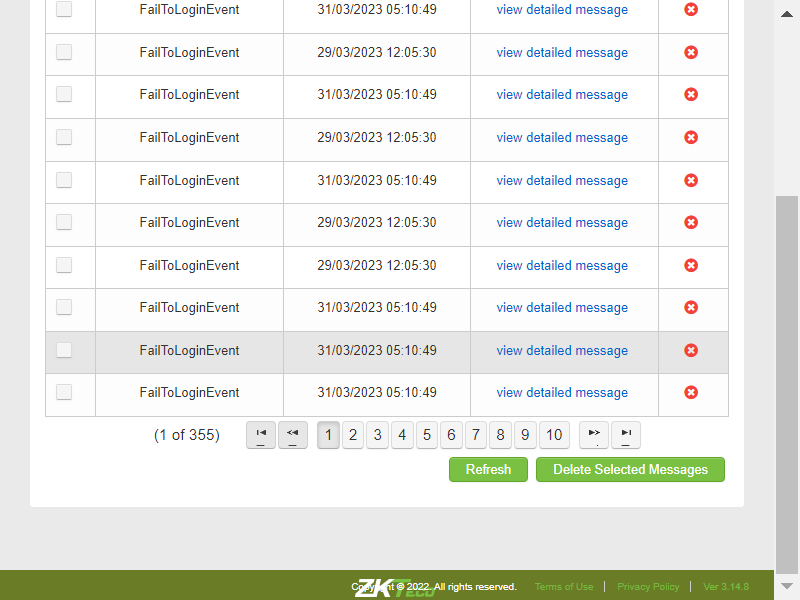To verify whether user is able to navigate to Locked accounts pagecom.zkteco.cirrusdcs.stepDefinitions.CirrusDCS.i_initialize_drivers_for_DCS_automation()Driver InitializedGiven I visit CirrusDCS HostLogin pageThen I visit CirrusDCS HostLogin with valid credentialsThen I click on the security and audit moduleThen I click on the Locked Accounts submoduleThen I verify that User is able to view the all the fields which are available on the Locked accounts pageStep skippedcom.zkteco.cirrusdcs.stepDefinitions.CirrusDCS.teardown(io.cucumber.java.Scenario)
To verify whether user is able to observe Event ocuured in Events Tablecom.zkteco.cirrusdcs.stepDefinitions.CirrusDCS.i_initialize_drivers_for_DCS_automation()Driver InitializedGiven I visit CirrusDCS HostLogin pageThen I visit CirrusDCS HostLogin with valid credentialsThen I click on the security and audit moduleThen I click on the Events submoduleThen I verify that User is able to observe Event ocuured in Events TableTo verify whether user is able to delete individual event messagecom.zkteco.cirrusdcs.stepDefinitions.CirrusDCS.i_initialize_drivers_for_DCS_automation()Driver InitializedGiven I visit CirrusDCS HostLogin pageThen I visit CirrusDCS HostLogin with valid credentialsThen I click on the security and audit moduleThen I click on the Events submoduleThen I verify that User is able to delete individual event messageStep skippedcom.zkteco.cirrusdcs.stepDefinitions.CirrusDCS.teardown(io.cucumber.java.Scenario)To verify whether user is able to delete mulitple events message at oncecom.zkteco.cirrusdcs.stepDefinitions.CirrusDCS.i_initialize_drivers_for_DCS_automation()Driver InitializedGiven I visit CirrusDCS HostLogin pageThen I visit CirrusDCS HostLogin with valid credentialsThen I click on the security and audit moduleThen I click on the Events submoduleThen I verify that User is able to delete mulitple events message at oncecom.zkteco.cirrusdcs.stepDefinitions.CirrusDCS.teardown(io.cucumber.java.Scenario)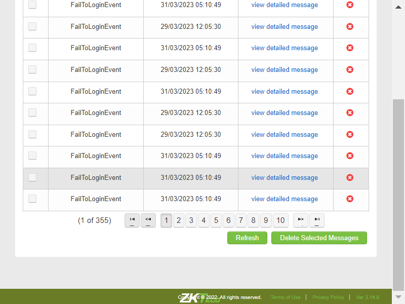To verify whether user is able to navigate to Locked accounts pagecom.zkteco.cirrusdcs.stepDefinitions.CirrusDCS.i_initialize_drivers_for_DCS_automation()Driver InitializedGiven I visit CirrusDCS HostLogin pageThen I visit CirrusDCS HostLogin with valid credentialsThen I click on the security and audit moduleThen I click on the Locked Accounts submoduleThen I verify that User is able to view the all the fields which are available on the Locked accounts pageStep skippedcom.zkteco.cirrusdcs.stepDefinitions.CirrusDCS.teardown(io.cucumber.java.Scenario) To verify whether user is able to view Locked Tenant account.com.zkteco.cirrusdcs.stepDefinitions.CirrusDCS.i_initialize_drivers_for_DCS_automation()Driver InitializedGiven I visit CirrusDCS HostLogin pageThen I visit CirrusDCS HostLogin with valid credentialsThen I click on the security and audit moduleThen I click on the Locked Accounts submoduleThen I verify that User is able to view the Locked Tenant accountTo verify whether user is able to unlock locked Tenant accountcom.zkteco.cirrusdcs.stepDefinitions.CirrusDCS.i_initialize_drivers_for_DCS_automation()Driver InitializedGiven I visit CirrusDCS HostLogin pageThen I visit CirrusDCS HostLogin with valid credentialsThen I click on the security and audit moduleThen I click on the Locked Accounts submoduleThen I verify that User is able to unlock locked Tenant accountTo verify whether user is able to view Locked Host admin account.com.zkteco.cirrusdcs.stepDefinitions.CirrusDCS.i_initialize_drivers_for_DCS_automation()Driver InitializedGiven I visit CirrusDCS HostLogin pageThen I visit CirrusDCS HostLogin with valid credentialsThen I click on the security and audit moduleThen I click on the Locked Accounts submoduleThen I verify that User is able to view the Locked Host admin accountStep skippedcom.zkteco.cirrusdcs.stepDefinitions.CirrusDCS.teardown(io.cucumber.java.Scenario)
To verify whether user is able to view Locked Tenant account.com.zkteco.cirrusdcs.stepDefinitions.CirrusDCS.i_initialize_drivers_for_DCS_automation()Driver InitializedGiven I visit CirrusDCS HostLogin pageThen I visit CirrusDCS HostLogin with valid credentialsThen I click on the security and audit moduleThen I click on the Locked Accounts submoduleThen I verify that User is able to view the Locked Tenant accountTo verify whether user is able to unlock locked Tenant accountcom.zkteco.cirrusdcs.stepDefinitions.CirrusDCS.i_initialize_drivers_for_DCS_automation()Driver InitializedGiven I visit CirrusDCS HostLogin pageThen I visit CirrusDCS HostLogin with valid credentialsThen I click on the security and audit moduleThen I click on the Locked Accounts submoduleThen I verify that User is able to unlock locked Tenant accountTo verify whether user is able to view Locked Host admin account.com.zkteco.cirrusdcs.stepDefinitions.CirrusDCS.i_initialize_drivers_for_DCS_automation()Driver InitializedGiven I visit CirrusDCS HostLogin pageThen I visit CirrusDCS HostLogin with valid credentialsThen I click on the security and audit moduleThen I click on the Locked Accounts submoduleThen I verify that User is able to view the Locked Host admin accountStep skippedcom.zkteco.cirrusdcs.stepDefinitions.CirrusDCS.teardown(io.cucumber.java.Scenario) To verify whether user is able to unlock locked Host admin accountcom.zkteco.cirrusdcs.stepDefinitions.CirrusDCS.i_initialize_drivers_for_DCS_automation()Driver InitializedGiven I visit CirrusDCS HostLogin pageThen I visit CirrusDCS HostLogin with valid credentialsThen I click on the security and audit moduleThen I click on the Locked Accounts submoduleThen I verify that User is able to unlock locked Host admin accountcom.zkteco.cirrusdcs.stepDefinitions.CirrusDCS.teardown(io.cucumber.java.Scenario)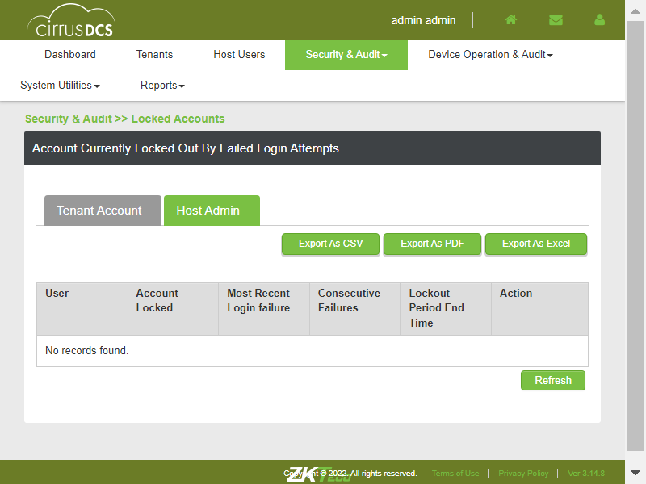To verify whether User is able to Export Locked Tenant Accounts details as CSV file.com.zkteco.cirrusdcs.stepDefinitions.CirrusDCS.i_initialize_drivers_for_DCS_automation()Driver InitializedGiven I visit CirrusDCS HostLogin pageThen I visit CirrusDCS HostLogin with valid credentialsThen I click on the security and audit moduleThen I click on the Locked Accounts submoduleThen I verify that User is able to Export Locked Tenant Accounts details as CSV fileTo verify whether User is able to Export Locked HostAdmin Accounts details as CSV file.com.zkteco.cirrusdcs.stepDefinitions.CirrusDCS.i_initialize_drivers_for_DCS_automation()Driver InitializedGiven I visit CirrusDCS HostLogin pageThen I visit CirrusDCS HostLogin with valid credentialsThen I click on the security and audit moduleThen I click on the Locked Accounts submoduleThen I verify that User is able to Export Locked HostAdmin Accounts details as CSV fileStep skippedcom.zkteco.cirrusdcs.stepDefinitions.CirrusDCS.teardown(io.cucumber.java.Scenario)
To verify whether user is able to unlock locked Host admin accountcom.zkteco.cirrusdcs.stepDefinitions.CirrusDCS.i_initialize_drivers_for_DCS_automation()Driver InitializedGiven I visit CirrusDCS HostLogin pageThen I visit CirrusDCS HostLogin with valid credentialsThen I click on the security and audit moduleThen I click on the Locked Accounts submoduleThen I verify that User is able to unlock locked Host admin accountcom.zkteco.cirrusdcs.stepDefinitions.CirrusDCS.teardown(io.cucumber.java.Scenario)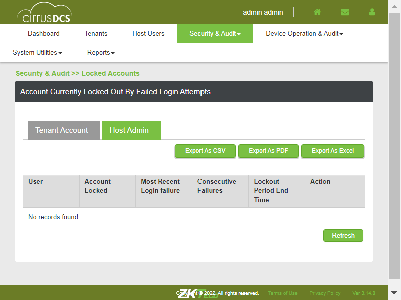To verify whether User is able to Export Locked Tenant Accounts details as CSV file.com.zkteco.cirrusdcs.stepDefinitions.CirrusDCS.i_initialize_drivers_for_DCS_automation()Driver InitializedGiven I visit CirrusDCS HostLogin pageThen I visit CirrusDCS HostLogin with valid credentialsThen I click on the security and audit moduleThen I click on the Locked Accounts submoduleThen I verify that User is able to Export Locked Tenant Accounts details as CSV fileTo verify whether User is able to Export Locked HostAdmin Accounts details as CSV file.com.zkteco.cirrusdcs.stepDefinitions.CirrusDCS.i_initialize_drivers_for_DCS_automation()Driver InitializedGiven I visit CirrusDCS HostLogin pageThen I visit CirrusDCS HostLogin with valid credentialsThen I click on the security and audit moduleThen I click on the Locked Accounts submoduleThen I verify that User is able to Export Locked HostAdmin Accounts details as CSV fileStep skippedcom.zkteco.cirrusdcs.stepDefinitions.CirrusDCS.teardown(io.cucumber.java.Scenario) To verify whether User is able to Export Locked Tenant Accounts details as PDF file.com.zkteco.cirrusdcs.stepDefinitions.CirrusDCS.i_initialize_drivers_for_DCS_automation()Driver InitializedGiven I visit CirrusDCS HostLogin pageThen I visit CirrusDCS HostLogin with valid credentialsThen I click on the security and audit moduleThen I click on the Locked Accounts submoduleThen I verify that User is able to Export Locked Tenant Accounts details as PDF fileStep skippedcom.zkteco.cirrusdcs.stepDefinitions.CirrusDCS.teardown(io.cucumber.java.Scenario)
To verify whether User is able to Export Locked Tenant Accounts details as PDF file.com.zkteco.cirrusdcs.stepDefinitions.CirrusDCS.i_initialize_drivers_for_DCS_automation()Driver InitializedGiven I visit CirrusDCS HostLogin pageThen I visit CirrusDCS HostLogin with valid credentialsThen I click on the security and audit moduleThen I click on the Locked Accounts submoduleThen I verify that User is able to Export Locked Tenant Accounts details as PDF fileStep skippedcom.zkteco.cirrusdcs.stepDefinitions.CirrusDCS.teardown(io.cucumber.java.Scenario) To verify whether User is able to Export Locked HostAdmin Accounts details as PDF file.com.zkteco.cirrusdcs.stepDefinitions.CirrusDCS.i_initialize_drivers_for_DCS_automation()Driver InitializedGiven I visit CirrusDCS HostLogin pageThen I visit CirrusDCS HostLogin with valid credentialsThen I click on the security and audit moduleThen I click on the Locked Accounts submoduleThen I verify that User is able to Export Locked HostAdmin Accounts details as PDF filecom.zkteco.cirrusdcs.stepDefinitions.CirrusDCS.teardown(io.cucumber.java.Scenario)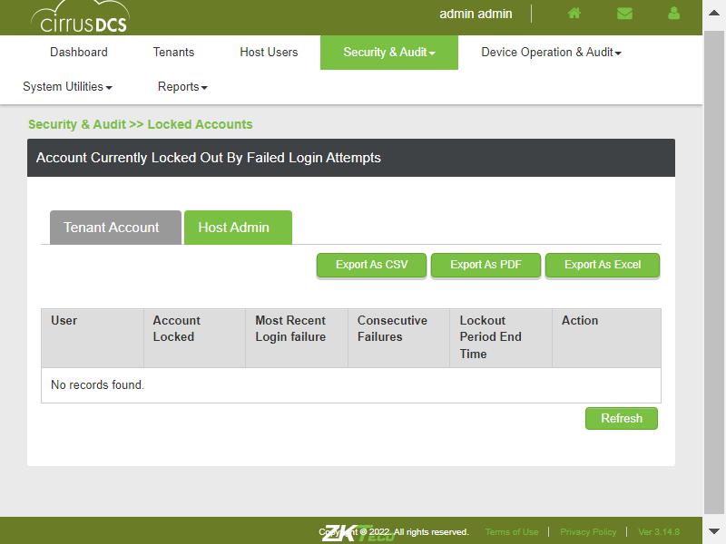To verify whether User is able to Export Locked Tenant Accounts details as EXCEL file.com.zkteco.cirrusdcs.stepDefinitions.CirrusDCS.i_initialize_drivers_for_DCS_automation()Driver InitializedGiven I visit CirrusDCS HostLogin pageThen I visit CirrusDCS HostLogin with valid credentialsThen I click on the security and audit moduleThen I click on the Locked Accounts submoduleThen I verify that User is able to Export Locked Tenant Accounts details as EXCEL fileStep skippedcom.zkteco.cirrusdcs.stepDefinitions.CirrusDCS.teardown(io.cucumber.java.Scenario)To verify whether User is able to Export Locked HostAdmin Accounts details as EXCEL file.com.zkteco.cirrusdcs.stepDefinitions.CirrusDCS.i_initialize_drivers_for_DCS_automation()Driver InitializedGiven I visit CirrusDCS HostLogin pageThen I visit CirrusDCS HostLogin with valid credentialsThen I click on the security and audit moduleThen I click on the Locked Accounts submoduleThen I verify that User is able to Export Locked HostAdmin Accounts details as EXCEL filecom.zkteco.cirrusdcs.stepDefinitions.CirrusDCS.teardown(io.cucumber.java.Scenario)
To verify whether User is able to Export Locked HostAdmin Accounts details as PDF file.com.zkteco.cirrusdcs.stepDefinitions.CirrusDCS.i_initialize_drivers_for_DCS_automation()Driver InitializedGiven I visit CirrusDCS HostLogin pageThen I visit CirrusDCS HostLogin with valid credentialsThen I click on the security and audit moduleThen I click on the Locked Accounts submoduleThen I verify that User is able to Export Locked HostAdmin Accounts details as PDF filecom.zkteco.cirrusdcs.stepDefinitions.CirrusDCS.teardown(io.cucumber.java.Scenario)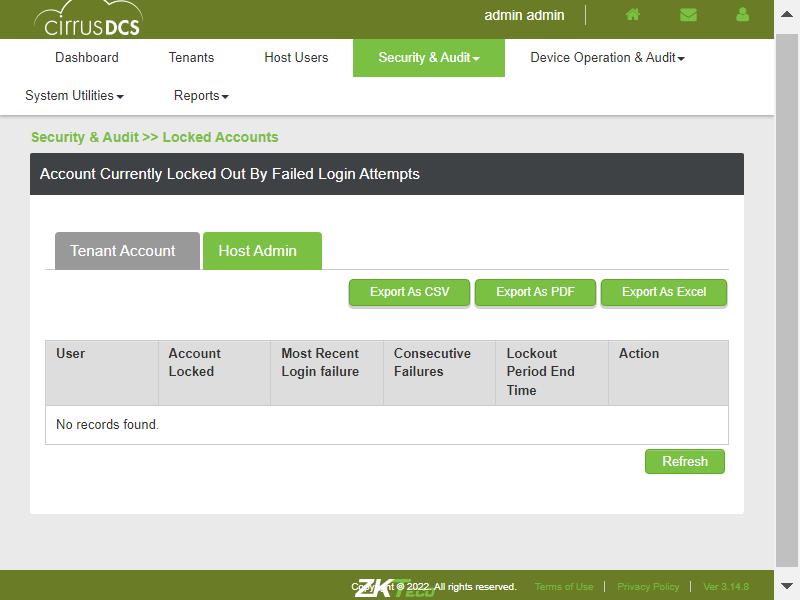To verify whether User is able to Export Locked Tenant Accounts details as EXCEL file.com.zkteco.cirrusdcs.stepDefinitions.CirrusDCS.i_initialize_drivers_for_DCS_automation()Driver InitializedGiven I visit CirrusDCS HostLogin pageThen I visit CirrusDCS HostLogin with valid credentialsThen I click on the security and audit moduleThen I click on the Locked Accounts submoduleThen I verify that User is able to Export Locked Tenant Accounts details as EXCEL fileStep skippedcom.zkteco.cirrusdcs.stepDefinitions.CirrusDCS.teardown(io.cucumber.java.Scenario)To verify whether User is able to Export Locked HostAdmin Accounts details as EXCEL file.com.zkteco.cirrusdcs.stepDefinitions.CirrusDCS.i_initialize_drivers_for_DCS_automation()Driver InitializedGiven I visit CirrusDCS HostLogin pageThen I visit CirrusDCS HostLogin with valid credentialsThen I click on the security and audit moduleThen I click on the Locked Accounts submoduleThen I verify that User is able to Export Locked HostAdmin Accounts details as EXCEL filecom.zkteco.cirrusdcs.stepDefinitions.CirrusDCS.teardown(io.cucumber.java.Scenario)
-
@CirrusDCS
74 tests
35 38@CirrusDCS
35 passed 38 failedStatus Timestamp TestName 16:38:25 PM CirrusDCSSecurityandAuditModule 16:38:25 PM Verify whether User is able to navigate to DcsHostLogin and verify the security and audit module CirrusDCSSecurityandAuditModule.Verify whether User is able to navigate to DcsHostLogin and verify the security and audit module16:38:30 PM Verify whether User is able to click on the host role page and verify the all the fields are available CirrusDCSSecurityandAuditModule.Verify whether User is able to click on the host role page and verify the all the fields are available16:38:35 PM To verify whether User is able to view the pages accessible for host_User/host_supre/host_admin Roles. CirrusDCSSecurityandAuditModule.To verify whether User is able to view the pages accessible for host_User/host_supre/host_admin Roles.16:38:52 PM To veriify whether User is able to Delete the page that is accessible for selected Role User. CirrusDCSSecurityandAuditModule.To veriify whether User is able to Delete the page that is accessible for selected Role User.16:39:46 PM To verify whether deleted page is not relflecting in the Page when logged in CirrusDCSSecurityandAuditModule.To verify whether deleted page is not relflecting in the Page when logged in16:40:39 PM To verify whether User is able to add the deleted page to the Role selected CirrusDCSSecurityandAuditModule.To verify whether User is able to add the deleted page to the Role selected16:41:34 PM To verify whether deleted page is not relflecting in the Page when logged in CirrusDCSSecurityandAuditModule.To verify whether deleted page is not relflecting in the Page when logged in16:42:28 PM To verify whether User is able to view the list of Users of Role CirrusDCSSecurityandAuditModule.To verify whether User is able to view the list of Users of Role16:42:35 PM To verify whether User is able to "Delete the User" from the selected Role CirrusDCSSecurityandAuditModule.To verify whether User is able to "Delete the User" from the selected Role16:42:42 PM To verify whether Deleted User can be added to User name list CirrusDCSSecurityandAuditModule.To verify whether Deleted User can be added to User name list16:42:49 PM To verify whether User is able to navigate to Tenant Role page. CirrusDCSSecurityandAuditModule.To verify whether User is able to navigate to Tenant Role page.16:42:54 PM To verify whether User is able to create new Tenant role. CirrusDCSSecurityandAuditModule.To verify whether User is able to create new Tenant role.16:43:16 PM To verify whether User is able to add new widget to the Tenant role. CirrusDCSSecurityandAuditModule.To verify whether User is able to add new widget to the Tenant role.16:44:11 PM To verify whether User is able to view list of pages accessible for the tenant role CirrusDCSSecurityandAuditModule.To verify whether User is able to view list of pages accessible for the tenant role16:44:35 PM To verify whether User is able to Add the pages to the Tenant role Accessible pages list. CirrusDCSSecurityandAuditModule.To verify whether User is able to Add the pages to the Tenant role Accessible pages list.16:45:39 PM To verify whether User is able to change permissions given to the accessible pages of the tenant role. CirrusDCSSecurityandAuditModule.To verify whether User is able to change permissions given to the accessible pages of the tenant role.16:45:55 PM To verify whether User is able to Delete the accessible page for the Tenant Role. CirrusDCSSecurityandAuditModule.To verify whether User is able to Delete the accessible page for the Tenant Role.16:46:40 PM To verify whether User is able to navigate to Security policy page. CirrusDCSSecurityandAuditModule.To verify whether User is able to navigate to Security policy page.16:46:45 PM To verify whether User is able to change the password streangth. CirrusDCSSecurityandAuditModule.To verify whether User is able to change the password streangth.16:46:52 PM To verify whether User is able to set password life span. CirrusDCSSecurityandAuditModule.To verify whether User is able to set password life span.16:46:59 PM To verify whether User is able to set the session Timeout CirrusDCSSecurityandAuditModule.To verify whether User is able to set the session Timeout16:47:06 PM To verify whether User is able to Set the Track interval time CirrusDCSSecurityandAuditModule.To verify whether User is able to Set the Track interval time16:47:12 PM To verify whether User is able to set the password length. CirrusDCSSecurityandAuditModule.To verify whether User is able to set the password length.16:47:17 PM To verify whether set password length policy is reflecting in Host page. CirrusDCSSecurityandAuditModule.To verify whether set password length policy is reflecting in Host page.16:47:22 PM To verify whether User is able to set Password Tracking. CirrusDCSSecurityandAuditModule.To verify whether User is able to set Password Tracking.16:47:26 PM To verify whether User is able to set the Max login trial attempt CirrusDCSSecurityandAuditModule.To verify whether User is able to set the Max login trial attempt16:47:31 PM To verify whether the account is locked after set number of Max incorrect login trial attempt CirrusDCSSecurityandAuditModule.To verify whether the account is locked after set number of Max incorrect login trial attempt16:47:36 PM To verify whether User is able to set the Lockout Interval CirrusDCSSecurityandAuditModule.To verify whether User is able to set the Lockout Interval16:47:41 PM To verify whether User is able to Set Two Factor Authentication (by email). CirrusDCSSecurityandAuditModule.To verify whether User is able to Set Two Factor Authentication (by email).16:48:20 PM To verify whether User is able to Set Two Factor Authentication (by email). CirrusDCSSecurityandAuditModule.To verify whether User is able to Set Two Factor Authentication (by email).16:48:24 PM To verify whether User is able to navigate to Active Login Users page. CirrusDCSSecurityandAuditModule.To verify whether User is able to navigate to Active Login Users page.16:48:31 PM To verify whether User is able to view login Users and their details in Login User Table. CirrusDCSSecurityandAuditModule.To verify whether User is able to view login Users and their details in Login User Table.16:48:42 PM To verify whether User is able to search User with User Account ID. CirrusDCSSecurityandAuditModule.To verify whether User is able to search User with User Account ID.16:48:47 PM To verify whether User is able to search User with User name CirrusDCSSecurityandAuditModule.To verify whether User is able to search User with User name16:48:53 PM To verify whether User is able to logoff login User CirrusDCSSecurityandAuditModule.To verify whether User is able to logoff login User16:49:02 PM To verify whether User is able to Export Active Login Users details as CSV file CirrusDCSSecurityandAuditModule.To verify whether User is able to Export Active Login Users details as CSV file16:49:06 PM To verify whether User is able to Export Active Login Users details as PDF file CirrusDCSSecurityandAuditModule.To verify whether User is able to Export Active Login Users details as PDF file16:49:11 PM To verify whether User is able to Export Active Login Users details as excel file CirrusDCSSecurityandAuditModule.To verify whether User is able to Export Active Login Users details as excel file16:49:16 PM To verify whether User is able to view recently logged in Users CirrusDCSSecurityandAuditModule.To verify whether User is able to view recently logged in Users16:49:20 PM To verify whether User is able to navigate to Host User Audit page. CirrusDCSSecurityandAuditModule.To verify whether User is able to navigate to Host User Audit page.16:49:25 PM To verify whether User is able to search User details by Date CirrusDCSSecurityandAuditModule.To verify whether User is able to search User details by Date16:49:34 PM To verify whether User is able to Search the User by entering Username CirrusDCSSecurityandAuditModule.To verify whether User is able to Search the User by entering Username16:49:42 PM To verify whether User is able to Export Host User Audit details as CSV file. CirrusDCSSecurityandAuditModule.To verify whether User is able to Export Host User Audit details as CSV file.16:49:46 PM To verify whether User is able to Export Host User Audit details as PDF file. CirrusDCSSecurityandAuditModule.To verify whether User is able to Export Host User Audit details as PDF file.16:49:51 PM To verify whether User is able to Export Host User Audit details as Excel file. CirrusDCSSecurityandAuditModule.To verify whether User is able to Export Host User Audit details as Excel file.16:49:55 PM To verify whether User is able to navigate to Login audit page CirrusDCSSecurityandAuditModule.To verify whether User is able to navigate to Login audit page16:50:00 PM To verify whether User is able to view login Users by Date CirrusDCSSecurityandAuditModule.To verify whether User is able to view login Users by Date16:50:07 PM To verify whether User is able to Filter User by Account ID CirrusDCSSecurityandAuditModule.To verify whether User is able to Filter User by Account ID16:50:45 PM To verify whether User is able to Filter User by User name CirrusDCSSecurityandAuditModule.To verify whether User is able to Filter User by User name16:51:22 PM To verify whether User is able to view Failed login attempted details CirrusDCSSecurityandAuditModule.To verify whether User is able to view Failed login attempted details16:52:26 PM To verify whether User is able To Export Login Audit details as CSV file. CirrusDCSSecurityandAuditModule.To verify whether User is able To Export Login Audit details as CSV file.16:52:31 PM To verify whether User is able To Export Login Audit details as PDF file. CirrusDCSSecurityandAuditModule.To verify whether User is able To Export Login Audit details as PDF file.16:52:36 PM To verify whether User is able To Export Login Audit details as EXCEL file. CirrusDCSSecurityandAuditModule.To verify whether User is able To Export Login Audit details as EXCEL file.16:52:40 PM To verify whether User is able to navigate to Expired Accounts page CirrusDCSSecurityandAuditModule.To verify whether User is able to navigate to Expired Accounts page16:52:45 PM To verify whether User is able to view details of Account expired. CirrusDCSSecurityandAuditModule.To verify whether User is able to view details of Account expired.16:52:50 PM To verify whether User is able to Export Expired Accounts details as CSV file. CirrusDCSSecurityandAuditModule.To verify whether User is able to Export Expired Accounts details as CSV file.16:52:55 PM To verify whether User is able to Export Expired Accounts details as PDF file. CirrusDCSSecurityandAuditModule.To verify whether User is able to Export Expired Accounts details as PDF file.16:53:01 PM To verify whether User is able to Export Expired Accounts details as EXCEL file. CirrusDCSSecurityandAuditModule.To verify whether User is able to Export Expired Accounts details as EXCEL file.16:53:05 PM To verify whether user is able to Navigate to Events page. CirrusDCSSecurityandAuditModule.To verify whether user is able to Navigate to Events page.16:53:10 PM To verify whether user is able to observe Event ocuured in Events Table CirrusDCSSecurityandAuditModule.To verify whether user is able to observe Event ocuured in Events Table16:53:16 PM To verify whether user is able to delete individual event message CirrusDCSSecurityandAuditModule.To verify whether user is able to delete individual event message16:53:20 PM To verify whether user is able to delete mulitple events message at once CirrusDCSSecurityandAuditModule.To verify whether user is able to delete mulitple events message at once16:53:55 PM To verify whether user is able to navigate to Locked accounts page CirrusDCSSecurityandAuditModule.To verify whether user is able to navigate to Locked accounts page16:54:00 PM To verify whether user is able to view Locked Tenant account. CirrusDCSSecurityandAuditModule.To verify whether user is able to view Locked Tenant account.16:55:05 PM To verify whether user is able to unlock locked Tenant account CirrusDCSSecurityandAuditModule.To verify whether user is able to unlock locked Tenant account16:56:09 PM To verify whether user is able to view Locked Host admin account. CirrusDCSSecurityandAuditModule.To verify whether user is able to view Locked Host admin account.16:56:14 PM To verify whether user is able to unlock locked Host admin account CirrusDCSSecurityandAuditModule.To verify whether user is able to unlock locked Host admin account16:56:48 PM To verify whether User is able to Export Locked Tenant Accounts details as CSV file. CirrusDCSSecurityandAuditModule.To verify whether User is able to Export Locked Tenant Accounts details as CSV file.16:56:53 PM To verify whether User is able to Export Locked HostAdmin Accounts details as CSV file. CirrusDCSSecurityandAuditModule.To verify whether User is able to Export Locked HostAdmin Accounts details as CSV file.16:56:58 PM To verify whether User is able to Export Locked Tenant Accounts details as PDF file. CirrusDCSSecurityandAuditModule.To verify whether User is able to Export Locked Tenant Accounts details as PDF file.16:57:02 PM To verify whether User is able to Export Locked HostAdmin Accounts details as PDF file. CirrusDCSSecurityandAuditModule.To verify whether User is able to Export Locked HostAdmin Accounts details as PDF file.16:57:36 PM To verify whether User is able to Export Locked Tenant Accounts details as EXCEL file. CirrusDCSSecurityandAuditModule.To verify whether User is able to Export Locked Tenant Accounts details as EXCEL file.16:57:41 PM To verify whether User is able to Export Locked HostAdmin Accounts details as EXCEL file. CirrusDCSSecurityandAuditModule.To verify whether User is able to Export Locked HostAdmin Accounts details as EXCEL file. -
@CirrusDCS_TC_01_A_Security
1 tests
1@CirrusDCS_TC_01_A_Security
1 passedStatus Timestamp TestName 16:38:25 PM Verify whether User is able to navigate to DcsHostLogin and verify the security and audit module CirrusDCSSecurityandAuditModule.Verify whether User is able to navigate to DcsHostLogin and verify the security and audit module -
@Smoke
17 tests
10 7@Smoke
10 passed 7 failedStatus Timestamp TestName 16:38:25 PM Verify whether User is able to navigate to DcsHostLogin and verify the security and audit module CirrusDCSSecurityandAuditModule.Verify whether User is able to navigate to DcsHostLogin and verify the security and audit module16:38:30 PM Verify whether User is able to click on the host role page and verify the all the fields are available CirrusDCSSecurityandAuditModule.Verify whether User is able to click on the host role page and verify the all the fields are available16:38:35 PM To verify whether User is able to view the pages accessible for host_User/host_supre/host_admin Roles. CirrusDCSSecurityandAuditModule.To verify whether User is able to view the pages accessible for host_User/host_supre/host_admin Roles.16:42:28 PM To verify whether User is able to view the list of Users of Role CirrusDCSSecurityandAuditModule.To verify whether User is able to view the list of Users of Role16:42:49 PM To verify whether User is able to navigate to Tenant Role page. CirrusDCSSecurityandAuditModule.To verify whether User is able to navigate to Tenant Role page.16:46:40 PM To verify whether User is able to navigate to Security policy page. CirrusDCSSecurityandAuditModule.To verify whether User is able to navigate to Security policy page.16:48:24 PM To verify whether User is able to navigate to Active Login Users page. CirrusDCSSecurityandAuditModule.To verify whether User is able to navigate to Active Login Users page.16:48:31 PM To verify whether User is able to view login Users and their details in Login User Table. CirrusDCSSecurityandAuditModule.To verify whether User is able to view login Users and their details in Login User Table.16:49:16 PM To verify whether User is able to view recently logged in Users CirrusDCSSecurityandAuditModule.To verify whether User is able to view recently logged in Users16:49:20 PM To verify whether User is able to navigate to Host User Audit page. CirrusDCSSecurityandAuditModule.To verify whether User is able to navigate to Host User Audit page.16:49:55 PM To verify whether User is able to navigate to Login audit page CirrusDCSSecurityandAuditModule.To verify whether User is able to navigate to Login audit page16:51:22 PM To verify whether User is able to view Failed login attempted details CirrusDCSSecurityandAuditModule.To verify whether User is able to view Failed login attempted details16:52:40 PM To verify whether User is able to navigate to Expired Accounts page CirrusDCSSecurityandAuditModule.To verify whether User is able to navigate to Expired Accounts page16:52:45 PM To verify whether User is able to view details of Account expired. CirrusDCSSecurityandAuditModule.To verify whether User is able to view details of Account expired.16:53:05 PM To verify whether user is able to Navigate to Events page. CirrusDCSSecurityandAuditModule.To verify whether user is able to Navigate to Events page.16:53:55 PM To verify whether user is able to navigate to Locked accounts page CirrusDCSSecurityandAuditModule.To verify whether user is able to navigate to Locked accounts page16:56:09 PM To verify whether user is able to view Locked Host admin account. CirrusDCSSecurityandAuditModule.To verify whether user is able to view Locked Host admin account. -
@DCSFullsuite
73 tests
35 38@DCSFullsuite
35 passed 38 failedStatus Timestamp TestName 16:38:25 PM Verify whether User is able to navigate to DcsHostLogin and verify the security and audit module CirrusDCSSecurityandAuditModule.Verify whether User is able to navigate to DcsHostLogin and verify the security and audit module16:38:30 PM Verify whether User is able to click on the host role page and verify the all the fields are available CirrusDCSSecurityandAuditModule.Verify whether User is able to click on the host role page and verify the all the fields are available16:38:35 PM To verify whether User is able to view the pages accessible for host_User/host_supre/host_admin Roles. CirrusDCSSecurityandAuditModule.To verify whether User is able to view the pages accessible for host_User/host_supre/host_admin Roles.16:38:52 PM To veriify whether User is able to Delete the page that is accessible for selected Role User. CirrusDCSSecurityandAuditModule.To veriify whether User is able to Delete the page that is accessible for selected Role User.16:39:46 PM To verify whether deleted page is not relflecting in the Page when logged in CirrusDCSSecurityandAuditModule.To verify whether deleted page is not relflecting in the Page when logged in16:40:39 PM To verify whether User is able to add the deleted page to the Role selected CirrusDCSSecurityandAuditModule.To verify whether User is able to add the deleted page to the Role selected16:41:34 PM To verify whether deleted page is not relflecting in the Page when logged in CirrusDCSSecurityandAuditModule.To verify whether deleted page is not relflecting in the Page when logged in16:42:28 PM To verify whether User is able to view the list of Users of Role CirrusDCSSecurityandAuditModule.To verify whether User is able to view the list of Users of Role16:42:35 PM To verify whether User is able to "Delete the User" from the selected Role CirrusDCSSecurityandAuditModule.To verify whether User is able to "Delete the User" from the selected Role16:42:42 PM To verify whether Deleted User can be added to User name list CirrusDCSSecurityandAuditModule.To verify whether Deleted User can be added to User name list16:42:49 PM To verify whether User is able to navigate to Tenant Role page. CirrusDCSSecurityandAuditModule.To verify whether User is able to navigate to Tenant Role page.16:42:54 PM To verify whether User is able to create new Tenant role. CirrusDCSSecurityandAuditModule.To verify whether User is able to create new Tenant role.16:43:16 PM To verify whether User is able to add new widget to the Tenant role. CirrusDCSSecurityandAuditModule.To verify whether User is able to add new widget to the Tenant role.16:44:11 PM To verify whether User is able to view list of pages accessible for the tenant role CirrusDCSSecurityandAuditModule.To verify whether User is able to view list of pages accessible for the tenant role16:44:35 PM To verify whether User is able to Add the pages to the Tenant role Accessible pages list. CirrusDCSSecurityandAuditModule.To verify whether User is able to Add the pages to the Tenant role Accessible pages list.16:45:39 PM To verify whether User is able to change permissions given to the accessible pages of the tenant role. CirrusDCSSecurityandAuditModule.To verify whether User is able to change permissions given to the accessible pages of the tenant role.16:45:55 PM To verify whether User is able to Delete the accessible page for the Tenant Role. CirrusDCSSecurityandAuditModule.To verify whether User is able to Delete the accessible page for the Tenant Role.16:46:40 PM To verify whether User is able to navigate to Security policy page. CirrusDCSSecurityandAuditModule.To verify whether User is able to navigate to Security policy page.16:46:45 PM To verify whether User is able to change the password streangth. CirrusDCSSecurityandAuditModule.To verify whether User is able to change the password streangth.16:46:52 PM To verify whether User is able to set password life span. CirrusDCSSecurityandAuditModule.To verify whether User is able to set password life span.16:46:59 PM To verify whether User is able to set the session Timeout CirrusDCSSecurityandAuditModule.To verify whether User is able to set the session Timeout16:47:06 PM To verify whether User is able to Set the Track interval time CirrusDCSSecurityandAuditModule.To verify whether User is able to Set the Track interval time16:47:12 PM To verify whether User is able to set the password length. CirrusDCSSecurityandAuditModule.To verify whether User is able to set the password length.16:47:17 PM To verify whether set password length policy is reflecting in Host page. CirrusDCSSecurityandAuditModule.To verify whether set password length policy is reflecting in Host page.16:47:22 PM To verify whether User is able to set Password Tracking. CirrusDCSSecurityandAuditModule.To verify whether User is able to set Password Tracking.16:47:26 PM To verify whether User is able to set the Max login trial attempt CirrusDCSSecurityandAuditModule.To verify whether User is able to set the Max login trial attempt16:47:31 PM To verify whether the account is locked after set number of Max incorrect login trial attempt CirrusDCSSecurityandAuditModule.To verify whether the account is locked after set number of Max incorrect login trial attempt16:47:36 PM To verify whether User is able to set the Lockout Interval CirrusDCSSecurityandAuditModule.To verify whether User is able to set the Lockout Interval16:47:41 PM To verify whether User is able to Set Two Factor Authentication (by email). CirrusDCSSecurityandAuditModule.To verify whether User is able to Set Two Factor Authentication (by email).16:48:20 PM To verify whether User is able to Set Two Factor Authentication (by email). CirrusDCSSecurityandAuditModule.To verify whether User is able to Set Two Factor Authentication (by email).16:48:24 PM To verify whether User is able to navigate to Active Login Users page. CirrusDCSSecurityandAuditModule.To verify whether User is able to navigate to Active Login Users page.16:48:31 PM To verify whether User is able to view login Users and their details in Login User Table. CirrusDCSSecurityandAuditModule.To verify whether User is able to view login Users and their details in Login User Table.16:48:42 PM To verify whether User is able to search User with User Account ID. CirrusDCSSecurityandAuditModule.To verify whether User is able to search User with User Account ID.16:48:47 PM To verify whether User is able to search User with User name CirrusDCSSecurityandAuditModule.To verify whether User is able to search User with User name16:48:53 PM To verify whether User is able to logoff login User CirrusDCSSecurityandAuditModule.To verify whether User is able to logoff login User16:49:02 PM To verify whether User is able to Export Active Login Users details as CSV file CirrusDCSSecurityandAuditModule.To verify whether User is able to Export Active Login Users details as CSV file16:49:06 PM To verify whether User is able to Export Active Login Users details as PDF file CirrusDCSSecurityandAuditModule.To verify whether User is able to Export Active Login Users details as PDF file16:49:11 PM To verify whether User is able to Export Active Login Users details as excel file CirrusDCSSecurityandAuditModule.To verify whether User is able to Export Active Login Users details as excel file16:49:16 PM To verify whether User is able to view recently logged in Users CirrusDCSSecurityandAuditModule.To verify whether User is able to view recently logged in Users16:49:20 PM To verify whether User is able to navigate to Host User Audit page. CirrusDCSSecurityandAuditModule.To verify whether User is able to navigate to Host User Audit page.16:49:25 PM To verify whether User is able to search User details by Date CirrusDCSSecurityandAuditModule.To verify whether User is able to search User details by Date16:49:34 PM To verify whether User is able to Search the User by entering Username CirrusDCSSecurityandAuditModule.To verify whether User is able to Search the User by entering Username16:49:42 PM To verify whether User is able to Export Host User Audit details as CSV file. CirrusDCSSecurityandAuditModule.To verify whether User is able to Export Host User Audit details as CSV file.16:49:46 PM To verify whether User is able to Export Host User Audit details as PDF file. CirrusDCSSecurityandAuditModule.To verify whether User is able to Export Host User Audit details as PDF file.16:49:51 PM To verify whether User is able to Export Host User Audit details as Excel file. CirrusDCSSecurityandAuditModule.To verify whether User is able to Export Host User Audit details as Excel file.16:49:55 PM To verify whether User is able to navigate to Login audit page CirrusDCSSecurityandAuditModule.To verify whether User is able to navigate to Login audit page16:50:00 PM To verify whether User is able to view login Users by Date CirrusDCSSecurityandAuditModule.To verify whether User is able to view login Users by Date16:50:07 PM To verify whether User is able to Filter User by Account ID CirrusDCSSecurityandAuditModule.To verify whether User is able to Filter User by Account ID16:50:45 PM To verify whether User is able to Filter User by User name CirrusDCSSecurityandAuditModule.To verify whether User is able to Filter User by User name16:51:22 PM To verify whether User is able to view Failed login attempted details CirrusDCSSecurityandAuditModule.To verify whether User is able to view Failed login attempted details16:52:26 PM To verify whether User is able To Export Login Audit details as CSV file. CirrusDCSSecurityandAuditModule.To verify whether User is able To Export Login Audit details as CSV file.16:52:31 PM To verify whether User is able To Export Login Audit details as PDF file. CirrusDCSSecurityandAuditModule.To verify whether User is able To Export Login Audit details as PDF file.16:52:36 PM To verify whether User is able To Export Login Audit details as EXCEL file. CirrusDCSSecurityandAuditModule.To verify whether User is able To Export Login Audit details as EXCEL file.16:52:40 PM To verify whether User is able to navigate to Expired Accounts page CirrusDCSSecurityandAuditModule.To verify whether User is able to navigate to Expired Accounts page16:52:45 PM To verify whether User is able to view details of Account expired. CirrusDCSSecurityandAuditModule.To verify whether User is able to view details of Account expired.16:52:50 PM To verify whether User is able to Export Expired Accounts details as CSV file. CirrusDCSSecurityandAuditModule.To verify whether User is able to Export Expired Accounts details as CSV file.16:52:55 PM To verify whether User is able to Export Expired Accounts details as PDF file. CirrusDCSSecurityandAuditModule.To verify whether User is able to Export Expired Accounts details as PDF file.16:53:01 PM To verify whether User is able to Export Expired Accounts details as EXCEL file. CirrusDCSSecurityandAuditModule.To verify whether User is able to Export Expired Accounts details as EXCEL file.16:53:05 PM To verify whether user is able to Navigate to Events page. CirrusDCSSecurityandAuditModule.To verify whether user is able to Navigate to Events page.16:53:10 PM To verify whether user is able to observe Event ocuured in Events Table CirrusDCSSecurityandAuditModule.To verify whether user is able to observe Event ocuured in Events Table16:53:16 PM To verify whether user is able to delete individual event message CirrusDCSSecurityandAuditModule.To verify whether user is able to delete individual event message16:53:20 PM To verify whether user is able to delete mulitple events message at once CirrusDCSSecurityandAuditModule.To verify whether user is able to delete mulitple events message at once16:53:55 PM To verify whether user is able to navigate to Locked accounts page CirrusDCSSecurityandAuditModule.To verify whether user is able to navigate to Locked accounts page16:54:00 PM To verify whether user is able to view Locked Tenant account. CirrusDCSSecurityandAuditModule.To verify whether user is able to view Locked Tenant account.16:55:05 PM To verify whether user is able to unlock locked Tenant account CirrusDCSSecurityandAuditModule.To verify whether user is able to unlock locked Tenant account16:56:09 PM To verify whether user is able to view Locked Host admin account. CirrusDCSSecurityandAuditModule.To verify whether user is able to view Locked Host admin account.16:56:14 PM To verify whether user is able to unlock locked Host admin account CirrusDCSSecurityandAuditModule.To verify whether user is able to unlock locked Host admin account16:56:48 PM To verify whether User is able to Export Locked Tenant Accounts details as CSV file. CirrusDCSSecurityandAuditModule.To verify whether User is able to Export Locked Tenant Accounts details as CSV file.16:56:53 PM To verify whether User is able to Export Locked HostAdmin Accounts details as CSV file. CirrusDCSSecurityandAuditModule.To verify whether User is able to Export Locked HostAdmin Accounts details as CSV file.16:56:58 PM To verify whether User is able to Export Locked Tenant Accounts details as PDF file. CirrusDCSSecurityandAuditModule.To verify whether User is able to Export Locked Tenant Accounts details as PDF file.16:57:02 PM To verify whether User is able to Export Locked HostAdmin Accounts details as PDF file. CirrusDCSSecurityandAuditModule.To verify whether User is able to Export Locked HostAdmin Accounts details as PDF file.16:57:36 PM To verify whether User is able to Export Locked Tenant Accounts details as EXCEL file. CirrusDCSSecurityandAuditModule.To verify whether User is able to Export Locked Tenant Accounts details as EXCEL file.16:57:41 PM To verify whether User is able to Export Locked HostAdmin Accounts details as EXCEL file. CirrusDCSSecurityandAuditModule.To verify whether User is able to Export Locked HostAdmin Accounts details as EXCEL file. -
@HostSecurityandAudit
73 tests
35 38@HostSecurityandAudit
35 passed 38 failedStatus Timestamp TestName 16:38:25 PM Verify whether User is able to navigate to DcsHostLogin and verify the security and audit module CirrusDCSSecurityandAuditModule.Verify whether User is able to navigate to DcsHostLogin and verify the security and audit module16:38:30 PM Verify whether User is able to click on the host role page and verify the all the fields are available CirrusDCSSecurityandAuditModule.Verify whether User is able to click on the host role page and verify the all the fields are available16:38:35 PM To verify whether User is able to view the pages accessible for host_User/host_supre/host_admin Roles. CirrusDCSSecurityandAuditModule.To verify whether User is able to view the pages accessible for host_User/host_supre/host_admin Roles.16:38:52 PM To veriify whether User is able to Delete the page that is accessible for selected Role User. CirrusDCSSecurityandAuditModule.To veriify whether User is able to Delete the page that is accessible for selected Role User.16:39:46 PM To verify whether deleted page is not relflecting in the Page when logged in CirrusDCSSecurityandAuditModule.To verify whether deleted page is not relflecting in the Page when logged in16:40:39 PM To verify whether User is able to add the deleted page to the Role selected CirrusDCSSecurityandAuditModule.To verify whether User is able to add the deleted page to the Role selected16:41:34 PM To verify whether deleted page is not relflecting in the Page when logged in CirrusDCSSecurityandAuditModule.To verify whether deleted page is not relflecting in the Page when logged in16:42:28 PM To verify whether User is able to view the list of Users of Role CirrusDCSSecurityandAuditModule.To verify whether User is able to view the list of Users of Role16:42:35 PM To verify whether User is able to "Delete the User" from the selected Role CirrusDCSSecurityandAuditModule.To verify whether User is able to "Delete the User" from the selected Role16:42:42 PM To verify whether Deleted User can be added to User name list CirrusDCSSecurityandAuditModule.To verify whether Deleted User can be added to User name list16:42:49 PM To verify whether User is able to navigate to Tenant Role page. CirrusDCSSecurityandAuditModule.To verify whether User is able to navigate to Tenant Role page.16:42:54 PM To verify whether User is able to create new Tenant role. CirrusDCSSecurityandAuditModule.To verify whether User is able to create new Tenant role.16:43:16 PM To verify whether User is able to add new widget to the Tenant role. CirrusDCSSecurityandAuditModule.To verify whether User is able to add new widget to the Tenant role.16:44:11 PM To verify whether User is able to view list of pages accessible for the tenant role CirrusDCSSecurityandAuditModule.To verify whether User is able to view list of pages accessible for the tenant role16:44:35 PM To verify whether User is able to Add the pages to the Tenant role Accessible pages list. CirrusDCSSecurityandAuditModule.To verify whether User is able to Add the pages to the Tenant role Accessible pages list.16:45:39 PM To verify whether User is able to change permissions given to the accessible pages of the tenant role. CirrusDCSSecurityandAuditModule.To verify whether User is able to change permissions given to the accessible pages of the tenant role.16:45:55 PM To verify whether User is able to Delete the accessible page for the Tenant Role. CirrusDCSSecurityandAuditModule.To verify whether User is able to Delete the accessible page for the Tenant Role.16:46:40 PM To verify whether User is able to navigate to Security policy page. CirrusDCSSecurityandAuditModule.To verify whether User is able to navigate to Security policy page.16:46:45 PM To verify whether User is able to change the password streangth. CirrusDCSSecurityandAuditModule.To verify whether User is able to change the password streangth.16:46:52 PM To verify whether User is able to set password life span. CirrusDCSSecurityandAuditModule.To verify whether User is able to set password life span.16:46:59 PM To verify whether User is able to set the session Timeout CirrusDCSSecurityandAuditModule.To verify whether User is able to set the session Timeout16:47:06 PM To verify whether User is able to Set the Track interval time CirrusDCSSecurityandAuditModule.To verify whether User is able to Set the Track interval time16:47:12 PM To verify whether User is able to set the password length. CirrusDCSSecurityandAuditModule.To verify whether User is able to set the password length.16:47:17 PM To verify whether set password length policy is reflecting in Host page. CirrusDCSSecurityandAuditModule.To verify whether set password length policy is reflecting in Host page.16:47:22 PM To verify whether User is able to set Password Tracking. CirrusDCSSecurityandAuditModule.To verify whether User is able to set Password Tracking.16:47:26 PM To verify whether User is able to set the Max login trial attempt CirrusDCSSecurityandAuditModule.To verify whether User is able to set the Max login trial attempt16:47:31 PM To verify whether the account is locked after set number of Max incorrect login trial attempt CirrusDCSSecurityandAuditModule.To verify whether the account is locked after set number of Max incorrect login trial attempt16:47:36 PM To verify whether User is able to set the Lockout Interval CirrusDCSSecurityandAuditModule.To verify whether User is able to set the Lockout Interval16:47:41 PM To verify whether User is able to Set Two Factor Authentication (by email). CirrusDCSSecurityandAuditModule.To verify whether User is able to Set Two Factor Authentication (by email).16:48:20 PM To verify whether User is able to Set Two Factor Authentication (by email). CirrusDCSSecurityandAuditModule.To verify whether User is able to Set Two Factor Authentication (by email).16:48:24 PM To verify whether User is able to navigate to Active Login Users page. CirrusDCSSecurityandAuditModule.To verify whether User is able to navigate to Active Login Users page.16:48:31 PM To verify whether User is able to view login Users and their details in Login User Table. CirrusDCSSecurityandAuditModule.To verify whether User is able to view login Users and their details in Login User Table.16:48:42 PM To verify whether User is able to search User with User Account ID. CirrusDCSSecurityandAuditModule.To verify whether User is able to search User with User Account ID.16:48:47 PM To verify whether User is able to search User with User name CirrusDCSSecurityandAuditModule.To verify whether User is able to search User with User name16:48:53 PM To verify whether User is able to logoff login User CirrusDCSSecurityandAuditModule.To verify whether User is able to logoff login User16:49:02 PM To verify whether User is able to Export Active Login Users details as CSV file CirrusDCSSecurityandAuditModule.To verify whether User is able to Export Active Login Users details as CSV file16:49:06 PM To verify whether User is able to Export Active Login Users details as PDF file CirrusDCSSecurityandAuditModule.To verify whether User is able to Export Active Login Users details as PDF file16:49:11 PM To verify whether User is able to Export Active Login Users details as excel file CirrusDCSSecurityandAuditModule.To verify whether User is able to Export Active Login Users details as excel file16:49:16 PM To verify whether User is able to view recently logged in Users CirrusDCSSecurityandAuditModule.To verify whether User is able to view recently logged in Users16:49:20 PM To verify whether User is able to navigate to Host User Audit page. CirrusDCSSecurityandAuditModule.To verify whether User is able to navigate to Host User Audit page.16:49:25 PM To verify whether User is able to search User details by Date CirrusDCSSecurityandAuditModule.To verify whether User is able to search User details by Date16:49:34 PM To verify whether User is able to Search the User by entering Username CirrusDCSSecurityandAuditModule.To verify whether User is able to Search the User by entering Username16:49:42 PM To verify whether User is able to Export Host User Audit details as CSV file. CirrusDCSSecurityandAuditModule.To verify whether User is able to Export Host User Audit details as CSV file.16:49:46 PM To verify whether User is able to Export Host User Audit details as PDF file. CirrusDCSSecurityandAuditModule.To verify whether User is able to Export Host User Audit details as PDF file.16:49:51 PM To verify whether User is able to Export Host User Audit details as Excel file. CirrusDCSSecurityandAuditModule.To verify whether User is able to Export Host User Audit details as Excel file.16:49:55 PM To verify whether User is able to navigate to Login audit page CirrusDCSSecurityandAuditModule.To verify whether User is able to navigate to Login audit page16:50:00 PM To verify whether User is able to view login Users by Date CirrusDCSSecurityandAuditModule.To verify whether User is able to view login Users by Date16:50:07 PM To verify whether User is able to Filter User by Account ID CirrusDCSSecurityandAuditModule.To verify whether User is able to Filter User by Account ID16:50:45 PM To verify whether User is able to Filter User by User name CirrusDCSSecurityandAuditModule.To verify whether User is able to Filter User by User name16:51:22 PM To verify whether User is able to view Failed login attempted details CirrusDCSSecurityandAuditModule.To verify whether User is able to view Failed login attempted details16:52:26 PM To verify whether User is able To Export Login Audit details as CSV file. CirrusDCSSecurityandAuditModule.To verify whether User is able To Export Login Audit details as CSV file.16:52:31 PM To verify whether User is able To Export Login Audit details as PDF file. CirrusDCSSecurityandAuditModule.To verify whether User is able To Export Login Audit details as PDF file.16:52:36 PM To verify whether User is able To Export Login Audit details as EXCEL file. CirrusDCSSecurityandAuditModule.To verify whether User is able To Export Login Audit details as EXCEL file.16:52:40 PM To verify whether User is able to navigate to Expired Accounts page CirrusDCSSecurityandAuditModule.To verify whether User is able to navigate to Expired Accounts page16:52:45 PM To verify whether User is able to view details of Account expired. CirrusDCSSecurityandAuditModule.To verify whether User is able to view details of Account expired.16:52:50 PM To verify whether User is able to Export Expired Accounts details as CSV file. CirrusDCSSecurityandAuditModule.To verify whether User is able to Export Expired Accounts details as CSV file.16:52:55 PM To verify whether User is able to Export Expired Accounts details as PDF file. CirrusDCSSecurityandAuditModule.To verify whether User is able to Export Expired Accounts details as PDF file.16:53:01 PM To verify whether User is able to Export Expired Accounts details as EXCEL file. CirrusDCSSecurityandAuditModule.To verify whether User is able to Export Expired Accounts details as EXCEL file.16:53:05 PM To verify whether user is able to Navigate to Events page. CirrusDCSSecurityandAuditModule.To verify whether user is able to Navigate to Events page.16:53:10 PM To verify whether user is able to observe Event ocuured in Events Table CirrusDCSSecurityandAuditModule.To verify whether user is able to observe Event ocuured in Events Table16:53:16 PM To verify whether user is able to delete individual event message CirrusDCSSecurityandAuditModule.To verify whether user is able to delete individual event message16:53:20 PM To verify whether user is able to delete mulitple events message at once CirrusDCSSecurityandAuditModule.To verify whether user is able to delete mulitple events message at once16:53:55 PM To verify whether user is able to navigate to Locked accounts page CirrusDCSSecurityandAuditModule.To verify whether user is able to navigate to Locked accounts page16:54:00 PM To verify whether user is able to view Locked Tenant account. CirrusDCSSecurityandAuditModule.To verify whether user is able to view Locked Tenant account.16:55:05 PM To verify whether user is able to unlock locked Tenant account CirrusDCSSecurityandAuditModule.To verify whether user is able to unlock locked Tenant account16:56:09 PM To verify whether user is able to view Locked Host admin account. CirrusDCSSecurityandAuditModule.To verify whether user is able to view Locked Host admin account.16:56:14 PM To verify whether user is able to unlock locked Host admin account CirrusDCSSecurityandAuditModule.To verify whether user is able to unlock locked Host admin account16:56:48 PM To verify whether User is able to Export Locked Tenant Accounts details as CSV file. CirrusDCSSecurityandAuditModule.To verify whether User is able to Export Locked Tenant Accounts details as CSV file.16:56:53 PM To verify whether User is able to Export Locked HostAdmin Accounts details as CSV file. CirrusDCSSecurityandAuditModule.To verify whether User is able to Export Locked HostAdmin Accounts details as CSV file.16:56:58 PM To verify whether User is able to Export Locked Tenant Accounts details as PDF file. CirrusDCSSecurityandAuditModule.To verify whether User is able to Export Locked Tenant Accounts details as PDF file.16:57:02 PM To verify whether User is able to Export Locked HostAdmin Accounts details as PDF file. CirrusDCSSecurityandAuditModule.To verify whether User is able to Export Locked HostAdmin Accounts details as PDF file.16:57:36 PM To verify whether User is able to Export Locked Tenant Accounts details as EXCEL file. CirrusDCSSecurityandAuditModule.To verify whether User is able to Export Locked Tenant Accounts details as EXCEL file.16:57:41 PM To verify whether User is able to Export Locked HostAdmin Accounts details as EXCEL file. CirrusDCSSecurityandAuditModule.To verify whether User is able to Export Locked HostAdmin Accounts details as EXCEL file. -
@CirrusDCS_TC_01_B_Security
1 tests
1@CirrusDCS_TC_01_B_Security
1 passedStatus Timestamp TestName 16:38:30 PM Verify whether User is able to click on the host role page and verify the all the fields are available CirrusDCSSecurityandAuditModule.Verify whether User is able to click on the host role page and verify the all the fields are available -
@CirrusDCS_TC_02_Security
1 tests
1@CirrusDCS_TC_02_Security
1 failedStatus Timestamp TestName 16:38:35 PM To verify whether User is able to view the pages accessible for host_User/host_supre/host_admin Roles. CirrusDCSSecurityandAuditModule.To verify whether User is able to view the pages accessible for host_User/host_supre/host_admin Roles. -
@CirrusDCS_TC_03_A_Security
1 tests
1@CirrusDCS_TC_03_A_Security
1 failedStatus Timestamp TestName 16:38:52 PM To veriify whether User is able to Delete the page that is accessible for selected Role User. CirrusDCSSecurityandAuditModule.To veriify whether User is able to Delete the page that is accessible for selected Role User. -
@Regression
56 tests
25 31@Regression
25 passed 31 failedStatus Timestamp TestName 16:38:52 PM To veriify whether User is able to Delete the page that is accessible for selected Role User. CirrusDCSSecurityandAuditModule.To veriify whether User is able to Delete the page that is accessible for selected Role User.16:39:46 PM To verify whether deleted page is not relflecting in the Page when logged in CirrusDCSSecurityandAuditModule.To verify whether deleted page is not relflecting in the Page when logged in16:40:39 PM To verify whether User is able to add the deleted page to the Role selected CirrusDCSSecurityandAuditModule.To verify whether User is able to add the deleted page to the Role selected16:41:34 PM To verify whether deleted page is not relflecting in the Page when logged in CirrusDCSSecurityandAuditModule.To verify whether deleted page is not relflecting in the Page when logged in16:42:35 PM To verify whether User is able to "Delete the User" from the selected Role CirrusDCSSecurityandAuditModule.To verify whether User is able to "Delete the User" from the selected Role16:42:42 PM To verify whether Deleted User can be added to User name list CirrusDCSSecurityandAuditModule.To verify whether Deleted User can be added to User name list16:42:54 PM To verify whether User is able to create new Tenant role. CirrusDCSSecurityandAuditModule.To verify whether User is able to create new Tenant role.16:43:16 PM To verify whether User is able to add new widget to the Tenant role. CirrusDCSSecurityandAuditModule.To verify whether User is able to add new widget to the Tenant role.16:44:11 PM To verify whether User is able to view list of pages accessible for the tenant role CirrusDCSSecurityandAuditModule.To verify whether User is able to view list of pages accessible for the tenant role16:44:35 PM To verify whether User is able to Add the pages to the Tenant role Accessible pages list. CirrusDCSSecurityandAuditModule.To verify whether User is able to Add the pages to the Tenant role Accessible pages list.16:45:39 PM To verify whether User is able to change permissions given to the accessible pages of the tenant role. CirrusDCSSecurityandAuditModule.To verify whether User is able to change permissions given to the accessible pages of the tenant role.16:45:55 PM To verify whether User is able to Delete the accessible page for the Tenant Role. CirrusDCSSecurityandAuditModule.To verify whether User is able to Delete the accessible page for the Tenant Role.16:46:45 PM To verify whether User is able to change the password streangth. CirrusDCSSecurityandAuditModule.To verify whether User is able to change the password streangth.16:46:52 PM To verify whether User is able to set password life span. CirrusDCSSecurityandAuditModule.To verify whether User is able to set password life span.16:46:59 PM To verify whether User is able to set the session Timeout CirrusDCSSecurityandAuditModule.To verify whether User is able to set the session Timeout16:47:06 PM To verify whether User is able to Set the Track interval time CirrusDCSSecurityandAuditModule.To verify whether User is able to Set the Track interval time16:47:12 PM To verify whether User is able to set the password length. CirrusDCSSecurityandAuditModule.To verify whether User is able to set the password length.16:47:17 PM To verify whether set password length policy is reflecting in Host page. CirrusDCSSecurityandAuditModule.To verify whether set password length policy is reflecting in Host page.16:47:22 PM To verify whether User is able to set Password Tracking. CirrusDCSSecurityandAuditModule.To verify whether User is able to set Password Tracking.16:47:26 PM To verify whether User is able to set the Max login trial attempt CirrusDCSSecurityandAuditModule.To verify whether User is able to set the Max login trial attempt16:47:31 PM To verify whether the account is locked after set number of Max incorrect login trial attempt CirrusDCSSecurityandAuditModule.To verify whether the account is locked after set number of Max incorrect login trial attempt16:47:36 PM To verify whether User is able to set the Lockout Interval CirrusDCSSecurityandAuditModule.To verify whether User is able to set the Lockout Interval16:47:41 PM To verify whether User is able to Set Two Factor Authentication (by email). CirrusDCSSecurityandAuditModule.To verify whether User is able to Set Two Factor Authentication (by email).16:48:20 PM To verify whether User is able to Set Two Factor Authentication (by email). CirrusDCSSecurityandAuditModule.To verify whether User is able to Set Two Factor Authentication (by email).16:48:42 PM To verify whether User is able to search User with User Account ID. CirrusDCSSecurityandAuditModule.To verify whether User is able to search User with User Account ID.16:48:47 PM To verify whether User is able to search User with User name CirrusDCSSecurityandAuditModule.To verify whether User is able to search User with User name16:48:53 PM To verify whether User is able to logoff login User CirrusDCSSecurityandAuditModule.To verify whether User is able to logoff login User16:49:02 PM To verify whether User is able to Export Active Login Users details as CSV file CirrusDCSSecurityandAuditModule.To verify whether User is able to Export Active Login Users details as CSV file16:49:06 PM To verify whether User is able to Export Active Login Users details as PDF file CirrusDCSSecurityandAuditModule.To verify whether User is able to Export Active Login Users details as PDF file16:49:11 PM To verify whether User is able to Export Active Login Users details as excel file CirrusDCSSecurityandAuditModule.To verify whether User is able to Export Active Login Users details as excel file16:49:25 PM To verify whether User is able to search User details by Date CirrusDCSSecurityandAuditModule.To verify whether User is able to search User details by Date16:49:34 PM To verify whether User is able to Search the User by entering Username CirrusDCSSecurityandAuditModule.To verify whether User is able to Search the User by entering Username16:49:42 PM To verify whether User is able to Export Host User Audit details as CSV file. CirrusDCSSecurityandAuditModule.To verify whether User is able to Export Host User Audit details as CSV file.16:49:46 PM To verify whether User is able to Export Host User Audit details as PDF file. CirrusDCSSecurityandAuditModule.To verify whether User is able to Export Host User Audit details as PDF file.16:49:51 PM To verify whether User is able to Export Host User Audit details as Excel file. CirrusDCSSecurityandAuditModule.To verify whether User is able to Export Host User Audit details as Excel file.16:50:00 PM To verify whether User is able to view login Users by Date CirrusDCSSecurityandAuditModule.To verify whether User is able to view login Users by Date16:50:07 PM To verify whether User is able to Filter User by Account ID CirrusDCSSecurityandAuditModule.To verify whether User is able to Filter User by Account ID16:50:45 PM To verify whether User is able to Filter User by User name CirrusDCSSecurityandAuditModule.To verify whether User is able to Filter User by User name16:52:26 PM To verify whether User is able To Export Login Audit details as CSV file. CirrusDCSSecurityandAuditModule.To verify whether User is able To Export Login Audit details as CSV file.16:52:31 PM To verify whether User is able To Export Login Audit details as PDF file. CirrusDCSSecurityandAuditModule.To verify whether User is able To Export Login Audit details as PDF file.16:52:36 PM To verify whether User is able To Export Login Audit details as EXCEL file. CirrusDCSSecurityandAuditModule.To verify whether User is able To Export Login Audit details as EXCEL file.16:52:50 PM To verify whether User is able to Export Expired Accounts details as CSV file. CirrusDCSSecurityandAuditModule.To verify whether User is able to Export Expired Accounts details as CSV file.16:52:55 PM To verify whether User is able to Export Expired Accounts details as PDF file. CirrusDCSSecurityandAuditModule.To verify whether User is able to Export Expired Accounts details as PDF file.16:53:01 PM To verify whether User is able to Export Expired Accounts details as EXCEL file. CirrusDCSSecurityandAuditModule.To verify whether User is able to Export Expired Accounts details as EXCEL file.16:53:10 PM To verify whether user is able to observe Event ocuured in Events Table CirrusDCSSecurityandAuditModule.To verify whether user is able to observe Event ocuured in Events Table16:53:16 PM To verify whether user is able to delete individual event message CirrusDCSSecurityandAuditModule.To verify whether user is able to delete individual event message16:53:20 PM To verify whether user is able to delete mulitple events message at once CirrusDCSSecurityandAuditModule.To verify whether user is able to delete mulitple events message at once16:54:00 PM To verify whether user is able to view Locked Tenant account. CirrusDCSSecurityandAuditModule.To verify whether user is able to view Locked Tenant account.16:55:05 PM To verify whether user is able to unlock locked Tenant account CirrusDCSSecurityandAuditModule.To verify whether user is able to unlock locked Tenant account16:56:14 PM To verify whether user is able to unlock locked Host admin account CirrusDCSSecurityandAuditModule.To verify whether user is able to unlock locked Host admin account16:56:48 PM To verify whether User is able to Export Locked Tenant Accounts details as CSV file. CirrusDCSSecurityandAuditModule.To verify whether User is able to Export Locked Tenant Accounts details as CSV file.16:56:53 PM To verify whether User is able to Export Locked HostAdmin Accounts details as CSV file. CirrusDCSSecurityandAuditModule.To verify whether User is able to Export Locked HostAdmin Accounts details as CSV file.16:56:58 PM To verify whether User is able to Export Locked Tenant Accounts details as PDF file. CirrusDCSSecurityandAuditModule.To verify whether User is able to Export Locked Tenant Accounts details as PDF file.16:57:02 PM To verify whether User is able to Export Locked HostAdmin Accounts details as PDF file. CirrusDCSSecurityandAuditModule.To verify whether User is able to Export Locked HostAdmin Accounts details as PDF file.16:57:36 PM To verify whether User is able to Export Locked Tenant Accounts details as EXCEL file. CirrusDCSSecurityandAuditModule.To verify whether User is able to Export Locked Tenant Accounts details as EXCEL file.16:57:41 PM To verify whether User is able to Export Locked HostAdmin Accounts details as EXCEL file. CirrusDCSSecurityandAuditModule.To verify whether User is able to Export Locked HostAdmin Accounts details as EXCEL file. -
@CirrusDCS_TC_03_B_Security
1 tests
1@CirrusDCS_TC_03_B_Security
1 failedStatus Timestamp TestName 16:39:46 PM To verify whether deleted page is not relflecting in the Page when logged in CirrusDCSSecurityandAuditModule.To verify whether deleted page is not relflecting in the Page when logged in -
@CirrusDCS_TC_04_Security
1 tests
1@CirrusDCS_TC_04_Security
1 failedStatus Timestamp TestName 16:40:39 PM To verify whether User is able to add the deleted page to the Role selected CirrusDCSSecurityandAuditModule.To verify whether User is able to add the deleted page to the Role selected -
@CirrusDCS_TC_05_Security
1 tests
1@CirrusDCS_TC_05_Security
1 failedStatus Timestamp TestName 16:41:34 PM To verify whether deleted page is not relflecting in the Page when logged in CirrusDCSSecurityandAuditModule.To verify whether deleted page is not relflecting in the Page when logged in -
@CirrusDCS_TC_06_Security
1 tests
1@CirrusDCS_TC_06_Security
1 failedStatus Timestamp TestName 16:42:28 PM To verify whether User is able to view the list of Users of Role CirrusDCSSecurityandAuditModule.To verify whether User is able to view the list of Users of Role -
@CirrusDCS_TC_07_Security
1 tests
1@CirrusDCS_TC_07_Security
1 failedStatus Timestamp TestName 16:42:35 PM To verify whether User is able to "Delete the User" from the selected Role CirrusDCSSecurityandAuditModule.To verify whether User is able to "Delete the User" from the selected Role -
@CirrusDCS_TC_08_Security
1 tests
1@CirrusDCS_TC_08_Security
1 failedStatus Timestamp TestName 16:42:42 PM To verify whether Deleted User can be added to User name list CirrusDCSSecurityandAuditModule.To verify whether Deleted User can be added to User name list -
@CirrusDCS_TC_10_Security
1 tests
1@CirrusDCS_TC_10_Security
1 failedStatus Timestamp TestName 16:42:49 PM To verify whether User is able to navigate to Tenant Role page. CirrusDCSSecurityandAuditModule.To verify whether User is able to navigate to Tenant Role page. -
@CirrusDCS_TC_11_Security
1 tests
1@CirrusDCS_TC_11_Security
1 passedStatus Timestamp TestName 16:42:54 PM To verify whether User is able to create new Tenant role. CirrusDCSSecurityandAuditModule.To verify whether User is able to create new Tenant role. -
@CirrusDCS_TC_12_Security
1 tests
1@CirrusDCS_TC_12_Security
1 failedStatus Timestamp TestName 16:43:16 PM To verify whether User is able to add new widget to the Tenant role. CirrusDCSSecurityandAuditModule.To verify whether User is able to add new widget to the Tenant role. -
@CirrusDCS_TC_13_Security
1 tests
1@CirrusDCS_TC_13_Security
1 passedStatus Timestamp TestName 16:44:11 PM To verify whether User is able to view list of pages accessible for the tenant role CirrusDCSSecurityandAuditModule.To verify whether User is able to view list of pages accessible for the tenant role -
@CirrusDCS_TC_14_Security
1 tests
1@CirrusDCS_TC_14_Security
1 failedStatus Timestamp TestName 16:44:35 PM To verify whether User is able to Add the pages to the Tenant role Accessible pages list. CirrusDCSSecurityandAuditModule.To verify whether User is able to Add the pages to the Tenant role Accessible pages list. -
@CirrusDCS_TC_15_Security
1 tests
1@CirrusDCS_TC_15_Security
1 passedStatus Timestamp TestName 16:45:39 PM To verify whether User is able to change permissions given to the accessible pages of the tenant role. CirrusDCSSecurityandAuditModule.To verify whether User is able to change permissions given to the accessible pages of the tenant role. -
@CirrusDCS_TC_17_Security
1 tests
1@CirrusDCS_TC_17_Security
1 failedStatus Timestamp TestName 16:45:55 PM To verify whether User is able to Delete the accessible page for the Tenant Role. CirrusDCSSecurityandAuditModule.To verify whether User is able to Delete the accessible page for the Tenant Role. -
@CirrusDCS_TC_19_Security
1 tests
1@CirrusDCS_TC_19_Security
1 passedStatus Timestamp TestName 16:46:40 PM To verify whether User is able to navigate to Security policy page. CirrusDCSSecurityandAuditModule.To verify whether User is able to navigate to Security policy page. -
@CirrusDCS_TC_20_Security
1 tests
1@CirrusDCS_TC_20_Security
1 failedStatus Timestamp TestName 16:46:45 PM To verify whether User is able to change the password streangth. CirrusDCSSecurityandAuditModule.To verify whether User is able to change the password streangth. -
@CirrusDCS_TC_21_Security
1 tests
1@CirrusDCS_TC_21_Security
1 failedStatus Timestamp TestName 16:46:52 PM To verify whether User is able to set password life span. CirrusDCSSecurityandAuditModule.To verify whether User is able to set password life span. -
@CirrusDCS_TC_23_Security
1 tests
1@CirrusDCS_TC_23_Security
1 failedStatus Timestamp TestName 16:46:59 PM To verify whether User is able to set the session Timeout CirrusDCSSecurityandAuditModule.To verify whether User is able to set the session Timeout -
@CirrusDCS_TC_25_Security
1 tests
1@CirrusDCS_TC_25_Security
1 failedStatus Timestamp TestName 16:47:06 PM To verify whether User is able to Set the Track interval time CirrusDCSSecurityandAuditModule.To verify whether User is able to Set the Track interval time -
@CirrusDCS_TC_26_Security
1 tests
1@CirrusDCS_TC_26_Security
1 failedStatus Timestamp TestName 16:47:12 PM To verify whether User is able to set the password length. CirrusDCSSecurityandAuditModule.To verify whether User is able to set the password length. -
@CirrusDCS_TC_27_Security
1 tests
1@CirrusDCS_TC_27_Security
1 failedStatus Timestamp TestName 16:47:17 PM To verify whether set password length policy is reflecting in Host page. CirrusDCSSecurityandAuditModule.To verify whether set password length policy is reflecting in Host page. -
@CirrusDCS_TC_28_Security
1 tests
1@CirrusDCS_TC_28_Security
1 failedStatus Timestamp TestName 16:47:22 PM To verify whether User is able to set Password Tracking. CirrusDCSSecurityandAuditModule.To verify whether User is able to set Password Tracking. -
@CirrusDCS_TC_30_Security
1 tests
1@CirrusDCS_TC_30_Security
1 failedStatus Timestamp TestName 16:47:26 PM To verify whether User is able to set the Max login trial attempt CirrusDCSSecurityandAuditModule.To verify whether User is able to set the Max login trial attempt -
@CirrusDCS_TC_31_Security
1 tests
1@CirrusDCS_TC_31_Security
1 failedStatus Timestamp TestName 16:47:31 PM To verify whether the account is locked after set number of Max incorrect login trial attempt CirrusDCSSecurityandAuditModule.To verify whether the account is locked after set number of Max incorrect login trial attempt -
@CirrusDCS_TC_32_Security_module
1 tests
1@CirrusDCS_TC_32_Security_module
1 failedStatus Timestamp TestName 16:47:36 PM To verify whether User is able to set the Lockout Interval CirrusDCSSecurityandAuditModule.To verify whether User is able to set the Lockout Interval -
@CirrusDCS_TC_34_Security_module
1 tests
1@CirrusDCS_TC_34_Security_module
1 failedStatus Timestamp TestName 16:47:41 PM To verify whether User is able to Set Two Factor Authentication (by email). CirrusDCSSecurityandAuditModule.To verify whether User is able to Set Two Factor Authentication (by email). -
@CirrusDCS_TC_36_Security_module
1 tests
1@CirrusDCS_TC_36_Security_module
1 failedStatus Timestamp TestName 16:48:20 PM To verify whether User is able to Set Two Factor Authentication (by email). CirrusDCSSecurityandAuditModule.To verify whether User is able to Set Two Factor Authentication (by email). -
@CirrusDCS_TC_38_Security_module
1 tests
1@CirrusDCS_TC_38_Security_module
1 passedStatus Timestamp TestName 16:48:24 PM To verify whether User is able to navigate to Active Login Users page. CirrusDCSSecurityandAuditModule.To verify whether User is able to navigate to Active Login Users page. -
@CirrusDCS_TC_39_Security_module
1 tests
1@CirrusDCS_TC_39_Security_module
1 passedStatus Timestamp TestName 16:48:31 PM To verify whether User is able to view login Users and their details in Login User Table. CirrusDCSSecurityandAuditModule.To verify whether User is able to view login Users and their details in Login User Table. -
@CirrusDCS_TC_40_Security_module
1 tests
1@CirrusDCS_TC_40_Security_module
1 passedStatus Timestamp TestName 16:48:42 PM To verify whether User is able to search User with User Account ID. CirrusDCSSecurityandAuditModule.To verify whether User is able to search User with User Account ID. -
@CirrusDCS_TC_41_Security_module
1 tests
1@CirrusDCS_TC_41_Security_module
1 passedStatus Timestamp TestName 16:48:47 PM To verify whether User is able to search User with User name CirrusDCSSecurityandAuditModule.To verify whether User is able to search User with User name -
@CirrusDCS_TC_42_Security_module
1 tests
1@CirrusDCS_TC_42_Security_module
1 passedStatus Timestamp TestName 16:48:53 PM To verify whether User is able to logoff login User CirrusDCSSecurityandAuditModule.To verify whether User is able to logoff login User -
@CirrusDCS_TC_43_Security_module
1 tests
1@CirrusDCS_TC_43_Security_module
1 passedStatus Timestamp TestName 16:49:02 PM To verify whether User is able to Export Active Login Users details as CSV file CirrusDCSSecurityandAuditModule.To verify whether User is able to Export Active Login Users details as CSV file -
@CirrusDCS_TC_44_Security_module
1 tests
1@CirrusDCS_TC_44_Security_module
1 passedStatus Timestamp TestName 16:49:06 PM To verify whether User is able to Export Active Login Users details as PDF file CirrusDCSSecurityandAuditModule.To verify whether User is able to Export Active Login Users details as PDF file -
@CirrusDCS_TC_45_Security_module
1 tests
1@CirrusDCS_TC_45_Security_module
1 passedStatus Timestamp TestName 16:49:11 PM To verify whether User is able to Export Active Login Users details as excel file CirrusDCSSecurityandAuditModule.To verify whether User is able to Export Active Login Users details as excel file -
@CirrusDCS_TC_46_Security_module
1 tests
1@CirrusDCS_TC_46_Security_module
1 passedStatus Timestamp TestName 16:49:16 PM To verify whether User is able to view recently logged in Users CirrusDCSSecurityandAuditModule.To verify whether User is able to view recently logged in Users -
@CirrusDCS_TC_47_Security_module
1 tests
1@CirrusDCS_TC_47_Security_module
1 passedStatus Timestamp TestName 16:49:20 PM To verify whether User is able to navigate to Host User Audit page. CirrusDCSSecurityandAuditModule.To verify whether User is able to navigate to Host User Audit page. -
@CirrusDCS_TC_48_Security_module
1 tests
1@CirrusDCS_TC_48_Security_module
1 passedStatus Timestamp TestName 16:49:25 PM To verify whether User is able to search User details by Date CirrusDCSSecurityandAuditModule.To verify whether User is able to search User details by Date -
@CirrusDCS_TC_49_Security_module
1 tests
1@CirrusDCS_TC_49_Security_module
1 passedStatus Timestamp TestName 16:49:34 PM To verify whether User is able to Search the User by entering Username CirrusDCSSecurityandAuditModule.To verify whether User is able to Search the User by entering Username -
@CirrusDCS_TC_50_Security_module
1 tests
1@CirrusDCS_TC_50_Security_module
1 passedStatus Timestamp TestName 16:49:42 PM To verify whether User is able to Export Host User Audit details as CSV file. CirrusDCSSecurityandAuditModule.To verify whether User is able to Export Host User Audit details as CSV file. -
@CirrusDCS_TC_51_Security_module
1 tests
1@CirrusDCS_TC_51_Security_module
1 passedStatus Timestamp TestName 16:49:46 PM To verify whether User is able to Export Host User Audit details as PDF file. CirrusDCSSecurityandAuditModule.To verify whether User is able to Export Host User Audit details as PDF file. -
@CirrusDCS_TC_52_Security_module
1 tests
1@CirrusDCS_TC_52_Security_module
1 passedStatus Timestamp TestName 16:49:51 PM To verify whether User is able to Export Host User Audit details as Excel file. CirrusDCSSecurityandAuditModule.To verify whether User is able to Export Host User Audit details as Excel file. -
@CirrusDCS_TC_53_Security_module
1 tests
1@CirrusDCS_TC_53_Security_module
1 passedStatus Timestamp TestName 16:49:55 PM To verify whether User is able to navigate to Login audit page CirrusDCSSecurityandAuditModule.To verify whether User is able to navigate to Login audit page -
@CirrusDCS_TC_54_A_Security_module
1 tests
1@CirrusDCS_TC_54_A_Security_module
1 failedStatus Timestamp TestName 16:50:00 PM To verify whether User is able to view login Users by Date CirrusDCSSecurityandAuditModule.To verify whether User is able to view login Users by Date -
@CirrusDCS_TC_54_B_Security_module
1 tests
1@CirrusDCS_TC_54_B_Security_module
1 passedStatus Timestamp TestName 16:50:07 PM To verify whether User is able to Filter User by Account ID CirrusDCSSecurityandAuditModule.To verify whether User is able to Filter User by Account ID -
@CirrusDCS_TC_55_Security_module
1 tests
1@CirrusDCS_TC_55_Security_module
1 passedStatus Timestamp TestName 16:50:45 PM To verify whether User is able to Filter User by User name CirrusDCSSecurityandAuditModule.To verify whether User is able to Filter User by User name -
@CirrusDCS_TC_56_Security_module
1 tests
1@CirrusDCS_TC_56_Security_module
1 passedStatus Timestamp TestName 16:51:22 PM To verify whether User is able to view Failed login attempted details CirrusDCSSecurityandAuditModule.To verify whether User is able to view Failed login attempted details -
@CirrusDCS_TC_58_Security_module
1 tests
1@CirrusDCS_TC_58_Security_module
1 passedStatus Timestamp TestName 16:52:26 PM To verify whether User is able To Export Login Audit details as CSV file. CirrusDCSSecurityandAuditModule.To verify whether User is able To Export Login Audit details as CSV file. -
@CirrusDCS_TC_59_Security_module
1 tests
1@CirrusDCS_TC_59_Security_module
1 passedStatus Timestamp TestName 16:52:31 PM To verify whether User is able To Export Login Audit details as PDF file. CirrusDCSSecurityandAuditModule.To verify whether User is able To Export Login Audit details as PDF file. -
@CirrusDCS_TC_60_Security_module
1 tests
1@CirrusDCS_TC_60_Security_module
1 passedStatus Timestamp TestName 16:52:36 PM To verify whether User is able To Export Login Audit details as EXCEL file. CirrusDCSSecurityandAuditModule.To verify whether User is able To Export Login Audit details as EXCEL file. -
@CirrusDCS_TC_61_Security_module
1 tests
1@CirrusDCS_TC_61_Security_module
1 passedStatus Timestamp TestName 16:52:40 PM To verify whether User is able to navigate to Expired Accounts page CirrusDCSSecurityandAuditModule.To verify whether User is able to navigate to Expired Accounts page -
@CirrusDCS_TC_62_Security_module
1 tests
1@CirrusDCS_TC_62_Security_module
1 failedStatus Timestamp TestName 16:52:45 PM To verify whether User is able to view details of Account expired. CirrusDCSSecurityandAuditModule.To verify whether User is able to view details of Account expired. -
@CirrusDCS_TC_63_Security_module
1 tests
1@CirrusDCS_TC_63_Security_module
1 passedStatus Timestamp TestName 16:52:50 PM To verify whether User is able to Export Expired Accounts details as CSV file. CirrusDCSSecurityandAuditModule.To verify whether User is able to Export Expired Accounts details as CSV file. -
@CirrusDCS_TC_64_Security_module
1 tests
1@CirrusDCS_TC_64_Security_module
1 passedStatus Timestamp TestName 16:52:55 PM To verify whether User is able to Export Expired Accounts details as PDF file. CirrusDCSSecurityandAuditModule.To verify whether User is able to Export Expired Accounts details as PDF file. -
@CirrusDCS_TC_65_Security_module
1 tests
1@CirrusDCS_TC_65_Security_module
1 failedStatus Timestamp TestName 16:53:01 PM To verify whether User is able to Export Expired Accounts details as EXCEL file. CirrusDCSSecurityandAuditModule.To verify whether User is able to Export Expired Accounts details as EXCEL file. -
@CirrusDCS_TC_66_Security_module
1 tests
1@CirrusDCS_TC_66_Security_module
1 failedStatus Timestamp TestName 16:53:05 PM To verify whether user is able to Navigate to Events page. CirrusDCSSecurityandAuditModule.To verify whether user is able to Navigate to Events page. -
@CirrusDCS_TC_67_Security_module
1 tests
1@CirrusDCS_TC_67_Security_module
1 passedStatus Timestamp TestName 16:53:10 PM To verify whether user is able to observe Event ocuured in Events Table CirrusDCSSecurityandAuditModule.To verify whether user is able to observe Event ocuured in Events Table -
@CirrusDCS_TC_68_Security_module
1 tests
1@CirrusDCS_TC_68_Security_module
1 failedStatus Timestamp TestName 16:53:16 PM To verify whether user is able to delete individual event message CirrusDCSSecurityandAuditModule.To verify whether user is able to delete individual event message -
@CirrusDCS_TC_69_Security_module
1 tests
1@CirrusDCS_TC_69_Security_module
1 failedStatus Timestamp TestName 16:53:20 PM To verify whether user is able to delete mulitple events message at once CirrusDCSSecurityandAuditModule.To verify whether user is able to delete mulitple events message at once -
@CirrusDCS_TC_70_Security_module
1 tests
1@CirrusDCS_TC_70_Security_module
1 failedStatus Timestamp TestName 16:53:55 PM To verify whether user is able to navigate to Locked accounts page CirrusDCSSecurityandAuditModule.To verify whether user is able to navigate to Locked accounts page -
@CirrusDCS_TC_71_Security_module
1 tests
1@CirrusDCS_TC_71_Security_module
1 passedStatus Timestamp TestName 16:54:00 PM To verify whether user is able to view Locked Tenant account. CirrusDCSSecurityandAuditModule.To verify whether user is able to view Locked Tenant account. -
@CirrusDCS_TC_72_Security_module
1 tests
1@CirrusDCS_TC_72_Security_module
1 passedStatus Timestamp TestName 16:55:05 PM To verify whether user is able to unlock locked Tenant account CirrusDCSSecurityandAuditModule.To verify whether user is able to unlock locked Tenant account -
@CirrusDCS_TC_73_Security_module
1 tests
1@CirrusDCS_TC_73_Security_module
1 failedStatus Timestamp TestName 16:56:09 PM To verify whether user is able to view Locked Host admin account. CirrusDCSSecurityandAuditModule.To verify whether user is able to view Locked Host admin account. -
@CirrusDCS_TC_74_Security_module
1 tests
1@CirrusDCS_TC_74_Security_module
1 failedStatus Timestamp TestName 16:56:14 PM To verify whether user is able to unlock locked Host admin account CirrusDCSSecurityandAuditModule.To verify whether user is able to unlock locked Host admin account -
@CirrusDCS_TC_75_A_Security_module
1 tests
1@CirrusDCS_TC_75_A_Security_module
1 passedStatus Timestamp TestName 16:56:48 PM To verify whether User is able to Export Locked Tenant Accounts details as CSV file. CirrusDCSSecurityandAuditModule.To verify whether User is able to Export Locked Tenant Accounts details as CSV file. -
@CirrusDCS_TC_75_B_Security_module
1 tests
1@CirrusDCS_TC_75_B_Security_module
1 failedStatus Timestamp TestName 16:56:53 PM To verify whether User is able to Export Locked HostAdmin Accounts details as CSV file. CirrusDCSSecurityandAuditModule.To verify whether User is able to Export Locked HostAdmin Accounts details as CSV file. -
@CirrusDCS_TC_76_A_Security_module
1 tests
1@CirrusDCS_TC_76_A_Security_module
1 failedStatus Timestamp TestName 16:56:58 PM To verify whether User is able to Export Locked Tenant Accounts details as PDF file. CirrusDCSSecurityandAuditModule.To verify whether User is able to Export Locked Tenant Accounts details as PDF file. -
@CirrusDCS_TC_76_B_Security_module
1 tests
1@CirrusDCS_TC_76_B_Security_module
1 failedStatus Timestamp TestName 16:57:02 PM To verify whether User is able to Export Locked HostAdmin Accounts details as PDF file. CirrusDCSSecurityandAuditModule.To verify whether User is able to Export Locked HostAdmin Accounts details as PDF file. -
@CirrusDCS_TC_77_A_Security_module
1 tests
1@CirrusDCS_TC_77_A_Security_module
1 failedStatus Timestamp TestName 16:57:36 PM To verify whether User is able to Export Locked Tenant Accounts details as EXCEL file. CirrusDCSSecurityandAuditModule.To verify whether User is able to Export Locked Tenant Accounts details as EXCEL file. -
@CirrusDCS_TC_77_B_Security_module
1 tests
1@CirrusDCS_TC_77_B_Security_module
1 failedStatus Timestamp TestName 16:57:41 PM To verify whether User is able to Export Locked HostAdmin Accounts details as EXCEL file. CirrusDCSSecurityandAuditModule.To verify whether User is able to Export Locked HostAdmin Accounts details as EXCEL file.
-
org.openqa.selenium.StaleElementReferenceException
1 tests
org.openqa.selenium.StaleElementReferenceException
Status Timestamp TestName 16:38:38 PM Then I verify that user is able to view the pages accessible for host_User/host_supre/host_admin Roles To verify whether User is able to view the pages accessible for host_User/host_supre/host_admin Roles. -
org.openqa.selenium.TimeoutException
4 tests
org.openqa.selenium.TimeoutException
Status Timestamp TestName 16:38:55 PM Then I verify that User is able to Delete the page that is accessible for selected Role User To veriify whether User is able to Delete the page that is accessible for selected Role User.16:39:49 PM Then I verify that User is able to Delete the page that is accessible for selected Role User To verify whether deleted page is not relflecting in the Page when logged in16:40:43 PM Then I verify that User is able to Delete the page that is accessible for selected Role User To verify whether User is able to add the deleted page to the Role selected16:41:37 PM Then I verify that User is able to Delete the page that is accessible for selected Role User To verify whether deleted page is not relflecting in the Page when logged in -
org.openqa.selenium.ElementClickInterceptedException
22 tests
org.openqa.selenium.ElementClickInterceptedException
Status Timestamp TestName 16:42:32 PM Then I click on the List of users btn To verify whether User is able to view the list of Users of Role16:42:39 PM Then I click on the List of users btn To verify whether User is able to "Delete the User" from the selected Role16:42:46 PM Then I click on the List of users btn To verify whether Deleted User can be added to User name list16:46:48 PM Then I verify user is able to view the all the option under in the password strength field To verify whether User is able to change the password streangth.16:46:56 PM Then I verify user is able to set the set password life span value as per the requirement To verify whether User is able to set password life span.16:47:03 PM Then I verify user is able to set the session time out value as per the requirement To verify whether User is able to set the session Timeout16:47:10 PM Then I verify user is able to set the track interval value as per the requirement To verify whether User is able to Set the Track interval time16:47:16 PM Then I verify user is able to set the password length value as per the requirement To verify whether User is able to set the password length.16:47:21 PM Then I verify user is able to set the password length value as per the requirement To verify whether set password length policy is reflecting in Host page.16:47:29 PM Then I verify user is able to set the password traking value as per the requirement To verify whether User is able to set the Max login trial attempt16:47:34 PM Then I verify user is able to set the Max login trial attempt value as per the requirement To verify whether the account is locked after set number of Max incorrect login trial attempt16:47:40 PM Then I verify user is able to set the Lockout interval value as per the requirement To verify whether User is able to set the Lockout Interval16:48:23 PM Then I verify user is able to set the Send Email when lockout check box toggle button as per the requirement To verify whether User is able to Set Two Factor Authentication (by email).16:52:48 PM Then I click on the Expired Accounts submodule To verify whether User is able to view details of Account expired.16:53:04 PM Then I click on the Expired Accounts submodule To verify whether User is able to Export Expired Accounts details as EXCEL file.16:53:08 PM Then I click on the Events submodule To verify whether user is able to Navigate to Events page.16:53:19 PM Then I click on the Events submodule To verify whether user is able to delete individual event message16:53:58 PM Then I click on the Locked Accounts submodule To verify whether user is able to navigate to Locked accounts page16:56:12 PM Then I click on the Locked Accounts submodule To verify whether user is able to view Locked Host admin account.16:56:56 PM Then I click on the Locked Accounts submodule To verify whether User is able to Export Locked HostAdmin Accounts details as CSV file.16:57:01 PM Then I click on the Locked Accounts submodule To verify whether User is able to Export Locked Tenant Accounts details as PDF file.16:57:40 PM Then I click on the Locked Accounts submodule To verify whether User is able to Export Locked Tenant Accounts details as EXCEL file. -
java.lang.AssertionError
2 tests
java.lang.AssertionError
Status Timestamp TestName 16:42:54 PM Then I verify that user is able to view the all the available fields To verify whether User is able to navigate to Tenant Role page.16:50:04 PM Then I verify that User is able to search login Users details by Date To verify whether User is able to view login Users by Date -
org.openqa.selenium.NoSuchElementException
4 tests
org.openqa.selenium.NoSuchElementException
Status Timestamp TestName 16:43:40 PM Then I view the Assign dashboard wedget window and select the Name To verify whether User is able to add new widget to the Tenant role.16:45:05 PM Then I add the new page under the particular tenant role To verify whether User is able to Add the pages to the Tenant role Accessible pages list.16:46:10 PM Then I select the particular tenant's tenant role and click on the edit button To verify whether User is able to Delete the accessible page for the Tenant Role.16:53:25 PM Then I verify that User is able to delete mulitple events message at once To verify whether user is able to delete mulitple events message at once -
java.lang.NumberFormatException
1 tests
java.lang.NumberFormatException
Status Timestamp TestName 16:47:26 PM Then I verify user is able to set the password traking value as per the requirement To verify whether User is able to set Password Tracking. -
org.openqa.selenium.ElementNotInteractableException
3 tests
org.openqa.selenium.ElementNotInteractableException
Status Timestamp TestName 16:47:48 PM Then I verify user is able to set the Two Factor Authentication by email as per the requirement To verify whether User is able to Set Two Factor Authentication (by email).16:57:06 PM Then I verify that User is able to Export Locked HostAdmin Accounts details as PDF file To verify whether User is able to Export Locked HostAdmin Accounts details as PDF file.16:57:45 PM Then I verify that User is able to Export Locked HostAdmin Accounts details as EXCEL file To verify whether User is able to Export Locked HostAdmin Accounts details as EXCEL file. -
java.lang.IndexOutOfBoundsException
1 tests
java.lang.IndexOutOfBoundsException
Status Timestamp TestName 16:56:18 PM Then I verify that User is able to unlock locked Host admin account To verify whether user is able to unlock locked Host admin account
Features
Scenarios
Steps
Features
1
.00%Scenarios
73
47.95%Start
Mar 31, 2023 04:38:24 PM
Duration
0h 19m 50s+953ms
Timeline
Tags
| Name | Passed | Failed | Skipped | Others | Passed % |
|---|---|---|---|---|---|
| @CirrusDCS | 35 | 38 | 0 | 0 | 47.297% |
| @CirrusDCS_TC_01_A_Security | 1 | 0 | 0 | 0 | 100% |
| @Smoke | 10 | 7 | 0 | 0 | 58.824% |
| @DCSFullsuite | 35 | 38 | 0 | 0 | 47.945% |
| @HostSecurityandAudit | 35 | 38 | 0 | 0 | 47.945% |
| @CirrusDCS_TC_01_B_Security | 1 | 0 | 0 | 0 | 100% |
| @CirrusDCS_TC_02_Security | 0 | 1 | 0 | 0 | 0% |
| @CirrusDCS_TC_03_A_Security | 0 | 1 | 0 | 0 | 0% |
| @Regression | 25 | 31 | 0 | 0 | 44.643% |
| @CirrusDCS_TC_03_B_Security | 0 | 1 | 0 | 0 | 0% |
| @CirrusDCS_TC_04_Security | 0 | 1 | 0 | 0 | 0% |
| @CirrusDCS_TC_05_Security | 0 | 1 | 0 | 0 | 0% |
| @CirrusDCS_TC_06_Security | 0 | 1 | 0 | 0 | 0% |
| @CirrusDCS_TC_07_Security | 0 | 1 | 0 | 0 | 0% |
| @CirrusDCS_TC_08_Security | 0 | 1 | 0 | 0 | 0% |
| @CirrusDCS_TC_10_Security | 0 | 1 | 0 | 0 | 0% |
| @CirrusDCS_TC_11_Security | 1 | 0 | 0 | 0 | 100% |
| @CirrusDCS_TC_12_Security | 0 | 1 | 0 | 0 | 0% |
| @CirrusDCS_TC_13_Security | 1 | 0 | 0 | 0 | 100% |
| @CirrusDCS_TC_14_Security | 0 | 1 | 0 | 0 | 0% |
| @CirrusDCS_TC_15_Security | 1 | 0 | 0 | 0 | 100% |
| @CirrusDCS_TC_17_Security | 0 | 1 | 0 | 0 | 0% |
| @CirrusDCS_TC_19_Security | 1 | 0 | 0 | 0 | 100% |
| @CirrusDCS_TC_20_Security | 0 | 1 | 0 | 0 | 0% |
| @CirrusDCS_TC_21_Security | 0 | 1 | 0 | 0 | 0% |
| @CirrusDCS_TC_23_Security | 0 | 1 | 0 | 0 | 0% |
| @CirrusDCS_TC_25_Security | 0 | 1 | 0 | 0 | 0% |
| @CirrusDCS_TC_26_Security | 0 | 1 | 0 | 0 | 0% |
| @CirrusDCS_TC_27_Security | 0 | 1 | 0 | 0 | 0% |
| @CirrusDCS_TC_28_Security | 0 | 1 | 0 | 0 | 0% |
| @CirrusDCS_TC_30_Security | 0 | 1 | 0 | 0 | 0% |
| @CirrusDCS_TC_31_Security | 0 | 1 | 0 | 0 | 0% |
| @CirrusDCS_TC_32_Security_module | 0 | 1 | 0 | 0 | 0% |
| @CirrusDCS_TC_34_Security_module | 0 | 1 | 0 | 0 | 0% |
| @CirrusDCS_TC_36_Security_module | 0 | 1 | 0 | 0 | 0% |
| @CirrusDCS_TC_38_Security_module | 1 | 0 | 0 | 0 | 100% |
| @CirrusDCS_TC_39_Security_module | 1 | 0 | 0 | 0 | 100% |
| @CirrusDCS_TC_40_Security_module | 1 | 0 | 0 | 0 | 100% |
| @CirrusDCS_TC_41_Security_module | 1 | 0 | 0 | 0 | 100% |
| @CirrusDCS_TC_42_Security_module | 1 | 0 | 0 | 0 | 100% |
| @CirrusDCS_TC_43_Security_module | 1 | 0 | 0 | 0 | 100% |
| @CirrusDCS_TC_44_Security_module | 1 | 0 | 0 | 0 | 100% |
| @CirrusDCS_TC_45_Security_module | 1 | 0 | 0 | 0 | 100% |
| @CirrusDCS_TC_46_Security_module | 1 | 0 | 0 | 0 | 100% |
| @CirrusDCS_TC_47_Security_module | 1 | 0 | 0 | 0 | 100% |
| @CirrusDCS_TC_48_Security_module | 1 | 0 | 0 | 0 | 100% |
| @CirrusDCS_TC_49_Security_module | 1 | 0 | 0 | 0 | 100% |
| @CirrusDCS_TC_50_Security_module | 1 | 0 | 0 | 0 | 100% |
| @CirrusDCS_TC_51_Security_module | 1 | 0 | 0 | 0 | 100% |
| @CirrusDCS_TC_52_Security_module | 1 | 0 | 0 | 0 | 100% |
| @CirrusDCS_TC_53_Security_module | 1 | 0 | 0 | 0 | 100% |
| @CirrusDCS_TC_54_A_Security_module | 0 | 1 | 0 | 0 | 0% |
| @CirrusDCS_TC_54_B_Security_module | 1 | 0 | 0 | 0 | 100% |
| @CirrusDCS_TC_55_Security_module | 1 | 0 | 0 | 0 | 100% |
| @CirrusDCS_TC_56_Security_module | 1 | 0 | 0 | 0 | 100% |
| @CirrusDCS_TC_58_Security_module | 1 | 0 | 0 | 0 | 100% |
| @CirrusDCS_TC_59_Security_module | 1 | 0 | 0 | 0 | 100% |
| @CirrusDCS_TC_60_Security_module | 1 | 0 | 0 | 0 | 100% |
| @CirrusDCS_TC_61_Security_module | 1 | 0 | 0 | 0 | 100% |
| @CirrusDCS_TC_62_Security_module | 0 | 1 | 0 | 0 | 0% |
| @CirrusDCS_TC_63_Security_module | 1 | 0 | 0 | 0 | 100% |
| @CirrusDCS_TC_64_Security_module | 1 | 0 | 0 | 0 | 100% |
| @CirrusDCS_TC_65_Security_module | 0 | 1 | 0 | 0 | 0% |
| @CirrusDCS_TC_66_Security_module | 0 | 1 | 0 | 0 | 0% |
| @CirrusDCS_TC_67_Security_module | 1 | 0 | 0 | 0 | 100% |
| @CirrusDCS_TC_68_Security_module | 0 | 1 | 0 | 0 | 0% |
| @CirrusDCS_TC_69_Security_module | 0 | 1 | 0 | 0 | 0% |
| @CirrusDCS_TC_70_Security_module | 0 | 1 | 0 | 0 | 0% |
| @CirrusDCS_TC_71_Security_module | 1 | 0 | 0 | 0 | 100% |
| @CirrusDCS_TC_72_Security_module | 1 | 0 | 0 | 0 | 100% |
| @CirrusDCS_TC_73_Security_module | 0 | 1 | 0 | 0 | 0% |
| @CirrusDCS_TC_74_Security_module | 0 | 1 | 0 | 0 | 0% |
| @CirrusDCS_TC_75_A_Security_module | 1 | 0 | 0 | 0 | 100% |
| @CirrusDCS_TC_75_B_Security_module | 0 | 1 | 0 | 0 | 0% |
| @CirrusDCS_TC_76_A_Security_module | 0 | 1 | 0 | 0 | 0% |
| @CirrusDCS_TC_76_B_Security_module | 0 | 1 | 0 | 0 | 0% |
| @CirrusDCS_TC_77_A_Security_module | 0 | 1 | 0 | 0 | 0% |
| @CirrusDCS_TC_77_B_Security_module | 0 | 1 | 0 | 0 | 0% |